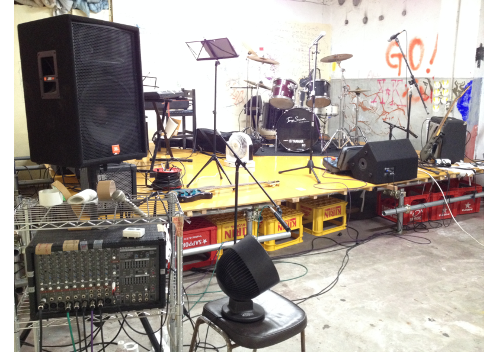
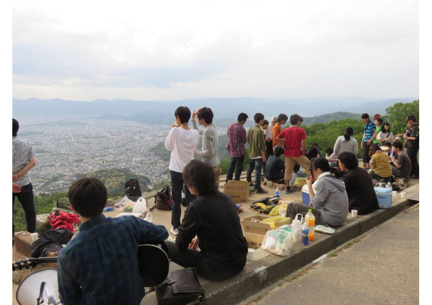
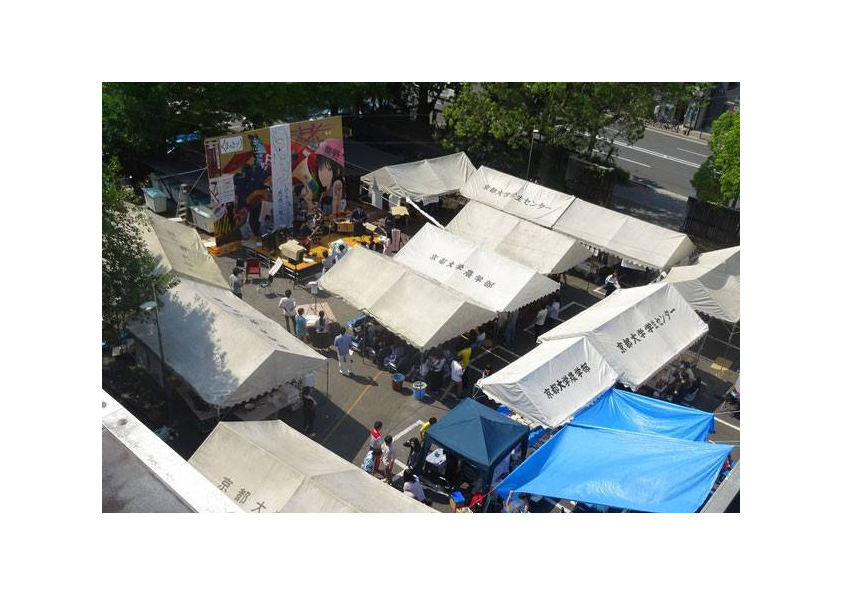
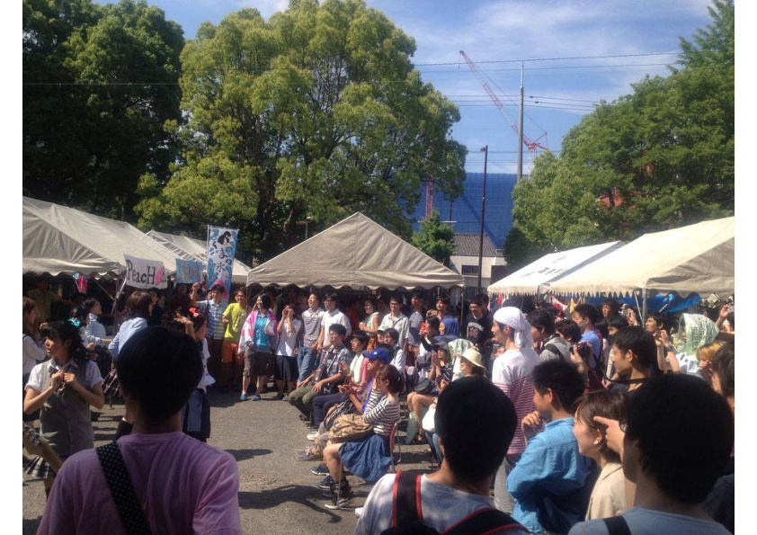
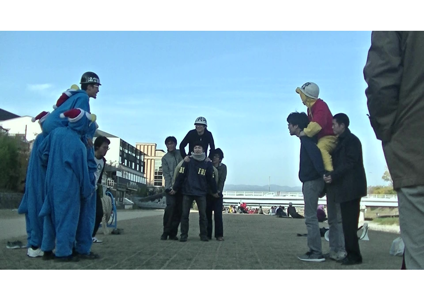
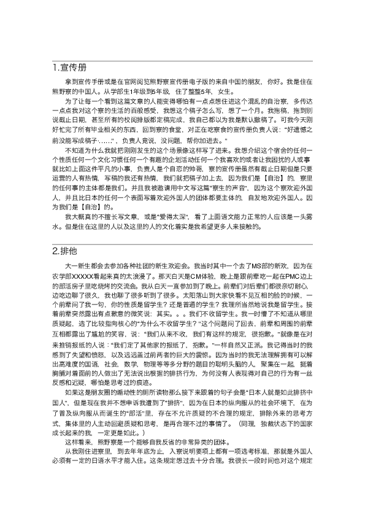
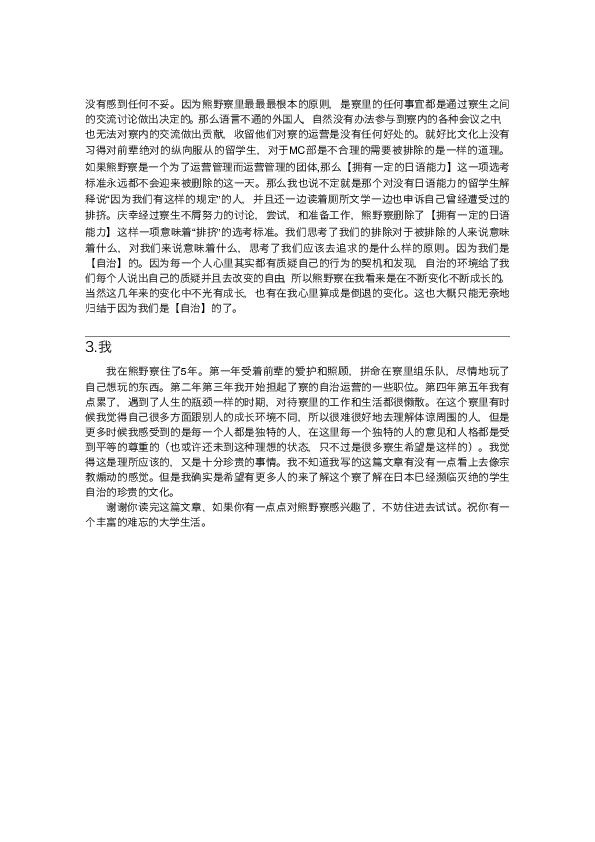

月4,100円(水光熱費込み)
3,000円
基本的に朝昼夕の三食
授業期間の平日(土日祝は休み)
朝180円, 昼290円, 夕420円(5食分以上のまとめ買いのカードなら朝10円, 昼夜は30円引き)
606-8393 京都府京都市左京区丸太町通川端東入東竹屋町50 京都大学熊野寮
075-751-4050 または 075-751-4051
4階建て鉄筋コンクリート3棟(A棟, B棟, C棟, 食堂)
築約50年, 各階11部屋(例外あり), 総部屋数127
422名
A棟16畳, B棟18畳(定員4名), C棟(定員2名)1
事務机, 椅子, 本棚, 二段ベッド, クローゼット
冷蔵庫やテレビ, 電気ケトル, 炊飯器などは上回生が持っていたり, 部屋で受け継がれていたりする場合がある. 防災上, 石油ストーブは禁止. 寮内は屋上含め全面禁煙. 喫煙所が玄関脇にある.
各階に設けられた十数畳の部屋. 各階の集会場兼遊戯室となる. 使用状況は階によって様々だが, たいてい漫画\(\cdot\) ゲームなどが置いてある.
各階にある. ガスコンロ\(\cdot\) ガス湯沸かし器\(\cdot\) 流し\(\cdot\) 鏡などがある.
各階にある. 各棟屋上には物干し場と乾燥機がある.
各階にある. 男女別の水洗トイレ. 和\(\cdot\) 洋式どちらもある. B棟一階には多目的トイレがある.
栄養士さんが考えたバランスのとれた食事を, 日替わりで楽しめる. 食堂内には自動販売機, 製氷機, 電子レンジがある. 卓球台も置いてある. 食堂はコンパなど多くの催し物に使われる.
維持費の支払い, 来客の対応などをする. 新聞各紙(京都\(\cdot\) 読売\(\cdot\) 朝日\(\cdot\) 毎日\(\cdot\) 日経) を閲覧できる. ここでは常時寮生が事務室当番として電話の取次ぎや, 郵便物の管理を行っている.
A棟一階には男女別のシャワー個室があり, 男子6基, 女子2基ある. 料金は3分10円のプリペイドカード式. ドライヤーもある.
食堂に準ずる交流の場. コンパなどに利用される.
B棟地下にある, スタジオ兼ライブハウス.
B棟地下にある, 分厚い扉に守られた部屋. 警察権力からの防衛に特化している.
たまに飛び込む者がいる. 寮祭企画\(\cdot\) みかん祭りの開催場所になったりもする. 元々は消火用.
食堂の卓球台, 敷地内のバスケットゴール\(\cdot\) フットサルコートなどに加え, 部屋で受け継がれているものもある.

京都大学の学生, 大学院生, 研究生, その他本学に学籍のある者(科目等履修生, 聴講生など)を対象とする. 性別, 国籍は問わない.
現在の空き人数(100名程度)を募集する.
入寮希望者が募集人数を超えた場合には選考を行う.
寮自治活動を理解し, 積極的に参加すること.
部屋割りの都合上, 選考は男女に分けて行われる.
全員に対して抽選を行って選考する.
一般選考に優先して行われる.
特別選考の内容
経済的に困窮している者は, 経済選考に出願できる. 出願希望者は, 出願参考書類の所定の欄に記入し, 既定の書類(後述)を添えて提出すること. 困窮状況が明らかな場合は優先的に入寮を認める.
留学生は経済選考で必要な証明書を提出するのが困難であること, また留学生が置かれている社会的状況を考慮し, 留学生枠を設定する. 経済的に困窮している留学生の入寮希望者は, 留学生枠への応募が可能である. その際, 留学生選考用書類も併せて提出する必要がある. 応募者の総数が留学生枠を超えた場合は, 留学生枠内で抽選を行う.
なお, 上記の経済選考, 留学生選考に応募した者は, 経済選考\(\cdot\) 留学生選考に漏れた時点で自動的に一般選考にまわる.
前期\(\cdot\) 後期の二つの枠を設け選考する. 前期枠は2/25\(\sim\) 3/16の面接日に出願してきた者, 後期枠は3/23\(\sim\) 3/24の面接日に出願してきた者を対象とする.
後期枠は, 合格発表が遅い後期特色入試での入学者が入寮を希望する場合も考慮して設けられているものである. 後期特色入試での入学者以外が後期枠に出願することも可能だが, 選考においては後期特色入試での入学者を優先する. 前期枠に比べて後期枠の定員は少なくなっているが, 前期枠に空きが生じた場合はその分を後期の定員に追加する.
下記の書類を面接時に提出すること. なお, 一度提出された書類はいかなる理由があろうと返却しない. 2
全員必要なもの
学籍を確認できるもの(学生証など) の写し. 3
入寮願(署名と捺印のうえ, 顔写真を貼ること )※留学生は捺印不要
同一世帯の住民票の写し(発行日から3ヶ月以内のもの) ※留学生は不要
出願参考書類(顔写真を貼ること)
また, 特別選考に応募するものは上記の書類に加えて, 選考区分に応じて以下の書類を提出すること.
特別選考書類
提出期限は以下の通り厳守のこと.
3月16日17時
3月24日17時
入寮を希望する者は, 必ず入寮面接を受けなければならない. この面接は入寮希望者が予め寮自治について理解するために行われる. これによる選考は, あまりに寮自治への理解がないと判断される場合を除いて行わない.
面接は前期と後期の2回に分けて行われる.
| 日程 | 受付時間 | 当落連絡 | 日程 | 受付時間 | 当落連絡 | ||
|---|---|---|---|---|---|---|---|
| 2月25日(月) | |||||||
| 2月26日(火) | |||||||
| 3月10日(日) | 3月23日(土) | ||||||
| 3月11日(月) | 3月24日(日) | ||||||
| 3月12日(火) | |||||||
| 3月16日(土) |
\(1 \sim 2\) 時間
面接後に可能である. 面接の場に入寮希望者本人以外は同席できないが, 見学は付添人の同伴も可能である. なお, 付添人には面接中の待合スペースを用意している.
当落発表
面接最終日の夜に選考を行う. 翌日中, 18時までに, 当落に拘わらず全ての出願者に選考結果を電話で通知する.
繰り上げ当選
落選者は, キャンセル待ちに登録することができる. 選考結果の連絡を受けた際に申し込むこと.
選考当選者のキャンセルが発生するたびに, キャンセル待ちに登録した者の中から, 繰り上げで追加の当選者が確定していく. 追加で当選した者には, 当選した時点で電話で連絡する.
期日までに行われなければ入寮資格を失う. やむを得ず面接日に不足書類があった者は手続きまでに必ず書類を持参すること.
3月に以下の日程で受け付けている.
| 曜日 | ||||
|---|---|---|---|---|
| 18日 | 25日 | 月 | 9:45 \(\sim\) 12:45 | \(\times\) |
| 19日 | 26日 | 火 | 9:45 \(\sim\) 12:45 | 14:00 \(\sim\) 15:30 |
| 20日 | 27日 | 水 | 9:45 \(\sim\) 12:45 | \(\times\) |
| 21日 | 28日 | 木 | 9:45 \(\sim\) 12:45 | 14:00 \(\sim\) 15:30 |
| 22日 | 29日 | 金 | 9:45 \(\sim\) 12:45 | 14:00 \(\sim\) 15:30 |
3月30日(土)14時からの入寮オリエンテーションに参加すること. また, これに不参加の者は強制退寮となる場合があるので, 必ず参加のこと.
所要時間: 3時間程度
熊野寮には, 全国の学生寮でも数少ない寮食堂があります. 基本的に大学の授業がある平日, 朝昼夜の三食が用意され, 朝は7時半$$10時, 昼は12時 \(\sim\) 13時, 夜は17時\(\sim\) 17時30分が喫食時間としています. これを見て, 「え, そんなに食べる時間短いの? 」と思った方もいるでしょう. ご安心を, そういったご飯の時間内には食べに来られない人のために昼と夜は「残置」というシステムを作ってあり, 昼は15時まで, 夜は22時までに食べにくるという条件の下で寮食を取り置くことができます! さらに, 寮食には利点がいっぱいあります!
まず, 寮食堂には栄養士の方がいらっしゃり, 毎日の栄養計算から献立を作って下さっています. しかもボリュームも満点! しっかり三食食べれば二十歳の成人男性が一日に必要な栄養素を摂取できるのです. 朝はパンと乳製品, 昼は野菜たっぷりのご飯, 夜は主菜を中心とした汁物, 副菜二品セット. 寮食三食で一日分のビタミン, ミネラルも摂取できるのです. 今の若い時分にしっかり栄養を摂っておかないと将来生活習慣病の予備軍になってしまいますが, 寮食なら安心ですね.
寮食は安全面にも気を配っています. 衛生面はもちろんのこと, 使う材料にも気を付けており, 肉はほとんど国産, 野菜は京野菜をふんだんに使用し, 卵は餌から管理されているものを使い, 添加物も極力省いています. 栄養面でも安全性の面でも身体に良い寮食, これは食べるしかありませんね!
栄養満点ボリューム満点, おまけに安全安心そんな寮食. でもお高いんでしょう? いえいえ, そんなことはありません! 朝は170円, 昼は260円, 夜は390円と破格! しかしながらその裏には厨房の栄養士さんや調理員さんの多大なる努力があります. 食材を大量購入し, その材料が無駄にならないような調理法, 献立を考えた上で栄養も毎日しっかり保つ. さらには夏の冷麺や素麺, 冬の鍋物やシチュー, おまけに節分(2月3日) やバレンタイン(2月14日) などの季節を感じさせるメニューも登場します.
食堂と言えばご飯を食べるところ. もちろんそれが食堂の一番の意味ですが, 熊野寮食堂は様々な寮生と知り合い交流する場でもあります. 熊野寮の食堂は24時間365日開放されています. その管理\(\cdot\) 運営は寮生と厨房員さんの二人三脚で行われます. なので自分たちの好きな時に自分たちの好きなことができる. これこそまさに自治であり, 寮食堂とは自治を象徴する場所なのです! 他愛もない話から昨今の政治の動きなどの難しい話まで, 色んな話をしながら寮食を食べるのもあり. 時々企画されるコンパやイベント事で朝まで交流するのもあり. 炊事当番(食器洗い当番とも言う) では寮生や厨房の方と一緒に働く. 自分たちの意志で自由にできる場所です. そしてその意思決定には外部からの干渉は受けません! 友達ができそうになくボッチになりがちな人でも, 寮食を食べたりコンパやイベントに参加したりすれば, 楽しい出会いが待っていることでしょう.
ここだけでは熊野寮食堂の素晴らしさは語りつくせません. 入寮した暁には, 寮食共々是非食堂を利用して有意義な大学生活を送って下さい.
| 月 | 火 | 水 | 木 | 金 | |
|---|---|---|---|---|---|
| 朝食 | |||||
| チキンカツ丼 | カレーピラフ | ハヤシライス | 柳川風丼 | 桜寿司 | |
| サラダ | ヨーグルトサラダ | ごま和え | ごま和え | ||
| コーンスープ | かき卵汁 | ||||
| 長崎ちゃんぽん | にしんそば | ||||
| ごま和え |
豚肉の和風焼き 豆腐ハンバーグ 鶏肉の香草焼き とんかつ いわしの塩焼き
せんきゃべつ せんきゃべつ せんきゃべつ せんきゃべつ せんきゃべつ
里芋の煮物 じゃがいもの金平 ひじきの炒め物 小松菜としめじの煮浸し 肉じゃが
ピーナツ和え ほうれん草のソテー ゆかり和え カレー酢和え お浸し
すまし汁 みそ汁 すまし汁 みそ汁 すまし汁
ハローこんにちは! 熊野寮に並みいるヘンテコスペースの中でも特にブッ飛んだ, 音楽室の紹介をするぜ!
既にご存知かもしれないが, 熊野寮は世にも珍しい, 音楽室があるブッ飛んだ寮なのだ! ! そして音楽室ユーザー全員から成る, 音楽室を自分たちの手で管理, 維持するブッ飛んだ団体が我々
MUC: Music room Users’ Conference
なのである!
音楽室といっても学校の音楽室のようなものでなく, バンド用の機材がそろったブッ飛んだ空間だ. バンド演奏を中心に利用されているが, 歌の練習, ダンスの練習にも使われている. つまりは実質フリースペース! ついでに利用料もフリー!
また, その発表の場として寮内で開かれるブッ飛んだライブに出ることもできるぞ! たくさんライブに出てブッ飛んだ時間を作ろう!
じゃあMUCって具体的に何すんのかな? それは大きく分けて3つある. 一つは音楽室機材のブッ飛んだメンテ, 管理. 一つはライブの準備. そして毎週月曜のブッ飛んだミーティングだ. いずれも詳しく書くことは控えておくが, たくさんの人と交流できる楽しいブッ飛んだ仕事だ! 機材に強くなれたりもするぜ!
バンドでライブがしたい? ダンスでクールに決めたい? うんうん! 大いに歓迎しよう. ちょっとだけ興味あるけど... うんうん! 君も大大歓迎だ! ブッ飛んだ紹介は以上だ! 諸君! MUCで会おうぜ!
バンドメンバー募集のお知らせ
ボーカル, ギター, ベース, キーボード, ドラム,
ワールドポップ(W-Pop), ポストモダンロック,
電磁波系アイドルソング...etc.
どもども, 有名熊野寮生でーす. はい, というわけでね, 今年も始まりました, 熊野寮イベントカレンダー, のコーナーです. はい. このコーナーではね, 熊野寮をもっと楽しくしてやろうをモットーに行われている, 各種イベントについてね, ちょーっと, ページをいただいて書いていきたいなあ, と思っております.
まあ, 最初に書くべきことといったらコレですね, ええ. goo辞書によると, 出来事, 催し物, 行事って意味だそうです. 英語だとeventですね. 何でも中学校で習う単語らしいですよ. はい. さすがに京大志望でコレ知らなかったら, もう分かんねえな. 要は熊野寮のいろいろな行事や催し物のことですね. はい, そのまんま.
熊野寮にはたくさんの恒例行事があります. なんならイベント運営を行う組織もあります(文化部っていうんですけどね). 大体はコンパなんですけど, たまーにそうじゃないのもあったりして, その度にどったんばったん大騒ぎで, つまりは一年中, 休んでる暇はないって事なんです. ええ. なんで皆さんも寮に入ったら是非ともいろんな企画に参加してリア充寮ライフを満喫してくださいね.
それでは, いよいよ熊野寮年間イベントスケジュールの発表です. ここでは熊野寮で毎年, 行われている企画, いわゆる恒例行事を紹介していきますよ. とはいえ, これ以外にも色々あるんで, 詳しくは面接でお尋ねください.
| 春のSC新歓 | 詳しくは面接で. | |
| 花見 | 鴨川で桜を見る, という体の飲み会. | |
| 古本市 | 寮中の本を集めて売りさばく, 以上. | |
| 春新歓 | MUC参照で, プリーズ. | |
| 全寮新歓 | 熊野寮最大規模の新歓. | |
| 大文字コンパ | 数少ない体育系行事. 登山に次ぐ登山, そして下山. | |
| くまのまつり | 寮全体のお祭り. ご近所さんと一緒に地域交流. | |
| 6月 | 雀皇戦 | 麻雀大会その1. 建校記念日前日にオールで麻雀. |
| 7月 | 七夕コンパ | 雨の記憶しかない京都の七夕. 夏っぽいことします. |
| 9月 | 秋のSC新歓 | 入寮面接のたびに新歓を行う. それが熊野寮. |
| 10月 | ナス\(\cdot\) サンマパ | 秋の風物詩, ナスとサンマをひたすら食う飲み会. |
| 寮祭 | 熊野寮全体で行う年に一度のお祭りだー. | |
| 麻将皇帝戦 | 麻雀大会その2. 目指せ, 麻雀二冠王. | |
| 全寮コンパ | 寮最大のコンパ, と言っても過言ではないかも. | |
| 1月 | 新年会 | 今年もよろしくお願いします. |
| 2月 | 追い出しコンパ | みんなこうやって巣立っていくんだなあー. みつを. |
| 3月 | 追いコンLIVE | みんなこうやって, 以下略. これもMUC参照で. |
へえー楽しそう. これ読んでたら何かやりたくなってきたなあ. しかも何か新しいこと. そういえば, 熊野寮って恒例企画以外やらないのかなあ? 新しいことしたいときはどうしたらいいんだろう? って思った, そこのアナタ!! 朗報です. 何と熊野寮には持ち込み企画というイカした制度が存在します. これを使えば, 誰でも, いつでも, 好きなときにやりたい企画を出来るんです. しかもお金は寮負担. うーん, すばらしい. それは分かったけど, うまく出来るかシンパーイってアナタも大丈夫. 初心者でも, そこら辺に転がってる先輩達がフォローしてくれるはずなので成功間違いなし. さあ, 今すぐ入寮して文化部まで企画書を提出だー.
 ※どんな企画でも許可されるわけではありませんので, ご了承ください.
熊野寮では, 毎年5月の下旬に「くまのまつり」というお祭を開催しています. このお祭は, もともとは地域の商店の方々が立ち上げ, 2011年から寮自治会が主催を引き継いだものです. これは地域と一緒につくるお祭りであり, 寮自治会としては寮外との連帯を目指すためのお祭りです.
お祭りでは地域の飲食店や雑貨店, 個人など20以上の外部出店ブースが並びます. ステージパフォーマンスや子供向けの企画もあり, とにかく楽しいお祭りです. 来場者は2日で1000人ほど. Facebook「くまのまつり」ページにも写真がたくさん載ってます. お祭りの様子は写真を見てもらうのが一番だと思うのでそちらを見てください.

ここでは「くまのまつり」開催の意義を少し掘り下げます. 端的に言えば, 「熊野寮の活動の素晴らしさを外部に発信する場」として「くまのまつり」があります.
熊野寮では2013年から毎年, 公安警察による熊野寮の家宅捜索が行われています. 2014年からはそれが大々的に全国に報じられるようになり, 寮生も度々逮捕されるようになりました. 家宅捜索の中で公安警察が行う違法行為\(\cdot\) 人権侵害に対して激しく抗議することもあります. 何かとご心配をおかけし, あるいは不安を抱かせているかもしれません. 一部の報道によって「過激派の巣窟」というイメージを持っている方もいるでしょう.
そもそも私たちは議論によって, 学生による寮の自主管理\(\cdot\) 運営を行っています. これは, ともすれば住人のエゴによる運営に成り下がってしまうものです. しかし, 私たちはエゴではなく, 「京大で学ぶ者に福利厚生を提供する」という熊野寮の役割を果たし, さらにより良い福利厚生のあり方を追求するために議論し, 寮自治会としての行動をとっています. さらに言えば, 教育を受ける権利を保障するための熊野寮は社会的にも必要なものであり, 我々寮自治会の活動は社会的にも必要なものだという自負があるのです.
例えば, 公安警察に対する激しい抗議には「住んでいる学生の生活と権利を守るため」という意義があります. 安心して暮らせる住居としての熊野寮を守るための行動です. しかし, この行動も「過激派の巣窟」を描く材料にされてしまいます.
さて, そこで私たちがお祭りを通してアピールするのは「過激派の巣窟なんかじゃありません」ということなのか. それは違います. 「過激派」という曖昧な言葉によるレッテル貼りに対して全力で否定することに生産性はありません. 寮生が何を考え, 寮自治会がどういう理念をもってその活動を展開しているのか, 見えにくい中身の話を対面で真摯に説明することにこそ意味があります.
レッテル貼りの材料にされようとも, 過激に見えるかもしれない抗議を続け, 中核派の学生が住むことも特に問題としない. そういった中には「安心して暮らせる住居を守る」「寮を必要とする学生には住居を保障する」という, 寮自治会が貫くべき理念があります.
ともすれば誤解されてしまう, しかし本当は非常に重要な寮自治会の内実を, しっかりと社会に発信し, 地域の方々と顔の見える関係をつくる中で広げていこうというのが「くまのまつり」の取り組みです.
今でこそ, 盛大なお祭になった「くまのまつり」ですが, はじめからそうだったわけではありません. 寮生や寮外の協力者がお店や知人に呼びかける中で, 毎年少しずつ輪が広がっていき, このような盛大なお祭へと成長していきました. やりたいと思ったことを何でも実行に移せるのが自治寮のいいところです. 「くまのまつり」は自治会のもつ無限の可能性の一つを示す取り組みだと思います. 入寮を検討される皆さんには入寮してもしなくてもぜひ「くまのまつり」に遊びに来てほしいと思います. もっと言えば一緒にお祭をつくりましょう! できれば入寮して一緒にやりましょう!
皆でアイデアを出し合いながらお祭を創りあげていく過程, ご近所の人と出会い語る中で新たな関係を創りあげていく過程では, かけがえのない団結が生まれます. それが熊野寮をよりよい自治寮に変えていく何よりのエネルギーなのです.

こんにちは. 2018年熊野寮祭実行員長です. この章を読んでいるみなさんにまず弁解なんですが, この文章はコミケ(初参加) の入場待ちの列で寒空のもと, 締め切りに追われて書いたものです. 寒すぎれ指取れそうでした. ゆりかもめ混みスギィ! だから不正確な情報に基づいた記述に基づいたものになるかも知れませんが許して欲しいです. 弁明は以上です.
まず簡単に熊野寮祭の定番企画を紹介してみなさんの度肝を抜いておきます.
12月の鴨川を自作のいかだ(突貫工事で作成) で渡る. いかだが壊れたら泳ぐ.
四条周辺で熊野寮生が運動会をする. 鴨川沿いで綱引したり, 三条から四条まで二人三脚したり. 一般参加も大歓迎. 警察権力からも参加多数.
京都駅の171段の階段を一般の人とジャンケンしまくってグリコで登る. 羞恥心を捨て去れ.
熊野寮のAB棟の間に綱を渡して綱引きをする. AB棟間での煽り合いが見もの.
京大のクスノキ周辺でコンパを開く. 諸事情により2018年は熊野寮D棟(旧称: 時計台) に登らなかった. 次代の時計台占拠はあなたに託された!
これ以外にもドッグフードやキャットフードを食べてみたり, 最凶のダサい服でおされな店に出かけてみたり, アルミホイルを何時間も延々と叩き続けたり, 焼畑したり, 薪を割ってお風呂に入ったり, 偽の謝罪会見を開いたりととにかくやりたいことをやってしまうのが熊野寮祭だとわかっていただけるでしょうか.
熊野寮祭は自由な場です. あなたのやりたいことを止める人はおそらくいないしょう. きっと型どおりではない経験を味わうことになると思います. これは受験生の方に向けて書くのですが, 京都大学というのは存外に普通なところです. 普通に授業を受け, 普通にサボり, 普通にバイトし, 普通にサークルに行く. 京大のいわゆる狂気といえるような人はごく一部にしかいないのです. しかし, ここ熊野寮にはまだ狂気と呼べるものが根強く残っていて, 大学生たちを情熱のままに行動させてしまうのです.
もしあなたが京都大学というブランドに, 自由と狂気とそれから他の追随を許さない強烈な個性を求めているのなら, 熊野寮祭はその全てを実現することができるでしょう.
寮祭実行委員長という大仰な役割を仰せつかった私も, 実はまだ一回生です. ですから, 学年なんて関係ありません. あたなの「これをやったらヤバイw」が次代の熊野寮祭を大きく盛り上げて行くことになるでしょう. あなたの熊野寮祭への参加をこころよりお待ちしております.

みなさんこんにちは. みなさんがこれから, 入られるであろうと期待する熊野寮は「自治寮」という, 寮生で「自治」を行っている寮です. 現在でもこのような「自治」を行っている学生寮は, 全国的に見てもほとんどありません. ここでは, 熊野寮の「自治」について, 紹介したいと思います.
「自治」とは何なのでしょうか. 辞書には「自分たちのことを自ら処理すること. 特に, 地方公共団体や大学がその範囲での行政\(\cdot\) 事務を自主的に行うこと(岩波国語辞典) 」と書いてあります. すこし幅が広すぎてよくわかりませんね.
ですが, 熊野寮の自治とは非常に単純です. それは「熊野寮のことについては熊野寮生が取り決め運営する」という, ただそれだけのことです. 「そんなことわざわざ確認しなくてもあたりまえ」という人がいるかもしれません. しかしながら, 熊野寮が誇る「自治」のすばらしさは, それをとことん追求していることにあります.
たとえば, 現在政府は学生に学生寮の入退寮権(どのような学生を寮に入れるか判断する権利) を認めていません. 従って, 全国のほとんどの大学では学生寮には大学が許可した学生のみが入寮するようになっています. では, どうして熊野寮では入退寮権を学生組織である熊野寮自治会が持っているのでしょうか. それは, 熊野寮生が「自分たちのことは自分たちで決める」と国や大学の決定に対し闘って, 勝ち取ったからです.
また, もともと熊野寮は日本人男子学部生のみが住める寮でした. しかし現在熊野寮には, 性別も年齢も国籍も問わず, さまざまな寮生がいます. これも, 熊野寮生が「自分たちのことは自分たちで決める」「寮は全京大生に広く開かれるべきだ」といって, 1973年に取り決めたことです.
このように, あげればきりはないのですが, 熊野寮の「自治」のすばらしさは, 「熊野寮のことについては熊野寮生が取り決め, 運営する」という自治の原則を徹底して貫いていることにあります.
大学自治という言葉をご存知でしょうか. 歴史を振り返ったとき, 戦時に大学は戦争協力をしたり, 国から戦争協力を強要されたりしました. その反省から, 戦後の大学人が不当な支配に屈しない教育の精神や, その証としての, 国に対する大学自治を打ち立てました. 戦後の寮自治も基本精神は同じところから始まります. 戦争協力のような国の不当な圧力に屈しないために, 学問の自由\(\cdot\) 機会均等を守るために, 寮の自治は行われてきました. 現在でも, 熊野寮が獲得している多くの権利(上記のような入退寮権の獲得や食堂の防衛など) は, 寮生が脈々と自治を行い, 経済的に苦しい学生のための熊野寮を守ってきたからこそ, こうしてあるのです.
さて, それでは自治ということについて, もう少し深く考えていきましょう. 「自治」のすばらしさとはどういう点にあるのでしょうか. それは第一に, 最も熊野寮のことを考えた運営ができるということです. 熊野寮のことは寮生が一番よく知っているのは言うまでもありません. その, 寮生が議論して導き出された運営は最も熊野寮生のことを考えた運営です.
もちろんそのためには, 寮生一人一人が寮のことに積極的に関わっていかなければ成り立ちません. 毎週行われる専門部会, それぞれの時期に活動する専門委員会, そして, 月に二回のブロック会議と年に二回の寮生大会. これらの寮の諸会議を通して, 熊野寮では寮生同士が意見を活発に交わしています. 従って, これらの会議は, 自治の根幹をなす部分であり, 寮生全員の出席が義務付けられています. 「これだけ会議があると, 大変だ」という声が聞こえてきそうですが, 大したことはありません. なぜなら, 他ならぬ自らのことを決める場なのですから.
そして第二に, 自分で自らのことを決定できる喜びです. 本来はあたりまえであるはずのことですが, 今の社会ではそれすらも困難になっているのが現状です. そのような中で, 熊野寮では寮生の寮生のための寮生による運営ができるのは何よりも楽しいことです.
第三は人と人とのつながりです. 例えば寮内で行われる季節ごとのコンパや, 談話室などでの夜を徹しての議論や麻雀に飲み会, 回生\(\cdot\) 性別\(\cdot\) 国籍を問わないその人間関係は, 自治を行っている熊野寮だからこそです.
自分がやりたいことを周りの人に呼びかけて, 企画として実行する. 寮生の想像力に上限がない以上, 自治をしている限り熊野寮の可能性\(\cdot\) 創造性\(\cdot\) 発展性は無限大です.
ところで, 「自分たちのことを自分たちで決める」というと, 個人主義的思考に勘違いされそうですが, そうではありません. 熊野寮は寮生みんなで運営しているものです. そこでは, 最低限のルールというものがあります. それは, 相手のことを考えるということです. 例えば, 熊野寮には当番制の仕事があります. この仕事を誰かがサボったらどうなるでしょう. その分の仕事は別の寮生に負担となります. そのようなことは絶対に認められません.
最後に, 寮自治の大事な基本精神を.
自治とは寮生みんなで行うものです. ですので, どのような立場, 性別, 国籍の人であろうとも, どれだけ利害が対立してようとも, あくまで対等な立場で話し合いを行うことが絶対不可欠です. こうした対等な話し合いで形成された信頼関係がないと, 安心して共同生活なんておくれません. このような信頼関係を築くためにも, 各寮生がお互いのことをよく知り, お互いのことを考え, 立場が異なる人とも対等に接して議論を重ねる努力をしなければいけません. これを, 徹底討論の原則といいます.
また, 熊野寮では何かトラブルが起きたときも, 押し付けや刑罰でよしとするというのではなく, 当事者が納得できるように, 最大限努力します. 寮生一人一人が, 本当に信頼できる熊野寮を目指しているからです. このような, 信頼関係が熊野寮自治の根源なのです.
長くなりましたが, これで自治の紹介は終わりです. みなさん納得していただけたでしょうか. まだ「? 」というところもあるかもしれませんが, それは入寮されてからということにしておきます. 寮はみんなが作っていくもの. たくさんの信頼できる仲間に囲まれた, 心躍るような寮生活を, 熊野寮でともに過ごそうではないですか. みなさんの入寮を心よりお待ちしております.
熊野寮自治会が大学当局と結んでいる確約と団体交渉について説明します.
言葉の解説:大学当局
「京都大学」には学生個人や多くの学部\(\cdot\) 寮自治会などの組織も含まれます. それら学生側と区別して大学運営の中枢である事務本部や各担当部署を指す言葉です. 「我々大学当局としては...」というように, 京都大学では職員や教員にも一般的に使われている言葉です.
確約とは熊野寮自治会と京都大学当局との間に取り交わされた約束です. 実際に居住している当事者である寮生の意見を無視して当局が一方的な決定を下すことを防ぎ, 当局と寮自治会が対等に協議できるようにするために, 当局側の権力行使に制限をかけるものです
前項で「当局と寮自治会が対等に協議できるように」と述べましたが, 法的に管理権を有する当局と学生の間には大きな権力差があるということが前提になっています. だからこそ, その力の差を可能な限り埋め合わせ, 可能な限り対等な話し合いによって学生のよりよい福利厚生を実現しようとしているのです.
例えば, 寮生は交渉で発言する際にも当局に対して名乗ることはありません. 所属を特定されて個人単位で弾圧される危険性があるからです. 京大では近年もアカデミックハラスメントが起きています. 自分の「家」について当局と意見が違っただけで, 学業面で不当な扱いを受けることがあってはなりません. もちろん, そもそも組織間の交渉なので, 寮自治会の立場を述べるのであれば, 個人が名乗る必要がないということでもあります.
確約書は厚生担当副学長の署名によって結ばれており, 形式的には副学長個人の寮に対する約束となっています. しかし, 「熊野寮自治会と京都大学の基本確約」とあるように, 本来的に確約は組織間の約束です. 例えば担当者(任期2年の副学長)が交代したからといって, 大学と自治会の約束がいちいち白紙に戻っては困ります. その為に, 副学長が交代しても引継ぎが自動的に, 確実になされるよう, 「次期以降の学生担当理事, 厚生補導担当副学長に引継ぐ. 」という条文が定められています.
ちなみに現在は, 当局の責任者として川添信介副学長が寮自治会と確約を結んでいます.
当事者(寮生は勿論, 今後入寮しうる京大生, その他関係者など誰でも) がすべて自由に参加できる, 公開の交渉形態です. 学内の大教室や寮食堂などで開かれてきました.
例えば対照的に, 少人数の交渉形態, つまり寮自治会の代表者数名だけが参加できる協議の場というのはどうでしょうか. 経済的に苦しくてアルバイトで忙しいため自治会の交渉事に中心的に参加できていない者や, 入寮したばかりで確約などの詳しい知識が無かったりする者など, 「自分の家のことが協議される場に参加したい」という思いは皆同じです. すべての当事者(特に居住している寮生) には協議\(\cdot\) 意思決定の場に参加する権利があると考え, この形態で交渉することが条文でも定められています. 団体交渉という形態を拒否すること自体も確約違反なのです.
熊野寮自治会と京都大学の基本確約
熊野寮自治会と京都大学は, 2004年3月31日に結ばれた, 両者の確約書に則り, 以下の内容に合意する. 両者は熊野寮が京都大学学生全体に開かれたものであることを確認し, その一層の充実のため誠実にこの確約内容を履行するものとする. 両者は学生の居住する熊野寮の運営に関しては, 当事者であり主体的にその責任を果たす学生の自治によることが最良であることを確認し, この認識を基礎にこの確約を結ぶものである. 本確約は文書としては二通作成し, 両者が一部ずつ所持するものとする.
京都大学は福利厚生施設としての熊野寮を設置し, その施設を維持\(\cdot\) 管理する. 京都大学は熊野寮の一層の充実に努めるものとする.
京都大学は, 熊野寮の日常的運営が熊野寮自治会によることを確認し, 熊野寮自治会はその運営を誠実に行うよう努力する.
京都大学は, 熊野寮の改廃や新寮および新規寮建設, 熊野寮に関わる人員配置, またその他熊野寮に重大な影響を与え得る事案に関しては, 公開の場で熊野寮自治会と団体交渉を行い, 合意の上決定する. 加えて, 熊野寮自治会と京都大学は, 一方が提示した議題に真摯に取り組むものとする.
熊野寮自治会または京都大学は, 両者の協議の場において, 何らかの条件を付そうとする場合には, 相手側の同意を得るものとする.
熊野寮自治会または京都大学は, 熊野寮に重大な影響を与えうる事案について何らかの計画を構想した段階で, 相手方にその内容を報告するものとする.
確約
上記の「熊野寮自治会と京都大学の基本確約」ならびに2010年12月17日の赤松副学長(当時) による「確約書」を基礎にして, 以下の内容を遵守する.
熊野寮食堂の機能の維持\(\cdot\) 向上について
過去に熊野寮食堂の食堂労働者を削減した事実を認める.
現在の熊野寮食堂の食堂労働者の置かれている労働環境が劣悪であることを認め, その改善に努める.
熊野寮食堂において, 食中毒が発生したり, 感染症が持ち込まれたりしても, これを理由とした食堂廃止は行わない. また保健所の指摘を理由とした食堂廃止も行わない.
京都大学熊野寮食堂運営会( 以下, 「食堂運営会」とする) について
2013年6月21日に改正された「京都大学熊野寮食堂運営会会則」ならびに2014年6月20日に改正された「京都大学熊野寮食堂運営会就業規則」を遵守する.
食堂運営会雇用調理員に対する一定の雇用責任を認め, 労働災害発生時の補償責任を負う.
寮内労働者について
寮内労働者の雇用形態について本来ならば全員大学雇いが望ましいことを認め, その労働環境\(\cdot\) 労働条件に関しては改善に努める.
恒常的業務に従事する寮内労働者が退職となった場合には, 後任を補充する. この後任補充の際, 雇用形態や労働条件などの, 労働に関わるすべての条件を, 前任者と同等もしくはそれ以上で確保する.
寮の生活環境の向上について
熊野寮に対する家宅捜索などについて
熊野寮に対する家宅捜索の立会いの方法について, 熊野寮自治会からの要求があった場合には, 熊野寮自治会と協議する.
熊野寮に対する家宅捜索において, 寮自治会への令状不提示, 過剰警備( 玄関前等の占拠) , 抗議する寮生や掲示物のビデオ\(\cdot\) 写真撮影など自治や人権を侵害する行為が行われた場合には, その場で抗議する.
熊野寮に対する家宅捜索が不当であるかどうかを検討し, 寮自治会に対して, その検討内容を明らかにする. 不当であると判断した場合には, 速やかに抗議する.
熊野寮自治会から「外部団体により不当な扱いを受けたので抗議してほしい」という要求があった場合, 大学職員がその不当な扱いを現認したか否かにかかわらず, 抗議の是非を検討する. また熊野寮自治会からの要求があった場合には, その不当な扱いについて, 熊野寮自治会と協議する.
桂キャンパスの利用について
熊野寮生をはじめとする学生の桂キャンパスへの通学において, 不便とならないように努める.
桂キャンパス周辺に新規寮を建設することを検討する.
寮自治会と国立大学法人京都大学の関係性について
中期計画, 年度計画を文部科学省に提出する前に, 寮に対してどのような影響があるのかを寮自治会に対して提示\(\cdot\) 説明し, 寮自治会からの要求があった場合には, 内容を変更することが可能な協議の場を持つ.
国立大学法人運営費交付金など大学法人の収入減少を理由とする寮関係予算の削減を行う場合, その重大性などに関する寮自治会との真摯な議論を経て, 寮自治会と合意するものとする.
団交–確約体制ならびに確約の引継ぎについて
学生担当理事, 厚生補導担当副学長は, 熊野寮自治会との間において, 団交–確約体制を維持する.
学生担当理事, 厚生補導担当副学長は, 「熊野寮自治会と京都大学の基本確約」ならびに本確約を, 次期以降の学生担当理事, 厚生補導担当副学長に引継ぐ.
現在, 熊野寮食堂の厨房に勤務する5名の栄養士\(\cdot\) 調理員のうち, 調理員2名については大学雇用ではなく, 寮生が人件費と労働保険料を負担している. 我々はこの現状の問題性を見失ってはならない.
「受益者負担の原則」とは「利益を得ている人」が金を払えという考え方である. これは60年代から国が押し出してきたものである. 教育について言えば, 「教育を受ければ将来良い職について金持ちになるから, 将来の自分への投資として金を払え」というような論法となる.
それに対して, 社会の維持発展のために教育は必要であるという事実から, 社会に必要なものは社会全体で保障すべきであるという考え方がある. 社会全体が利益を得ているから社会全体で金を賄うというものである. つまり「受益者負担の原則」を否定する考え方である. 熊野寮自治会はこの立場で運動し, 国･当局との攻防を繰り広げて今にいたる.
こう考えれば, 調理員の人件費についても本来公費で賄われるべきであり, つまり京都大学が調理員の雇用を保障すべきである.
歴史を見れば, 寮自治会が運動した結果, 1969年7月以降, 調理員全員が京都大学に公務員として雇用されていた. 大学当局すらも, 国策である「受益者負担の原則」に反対する立場に立たせたのである.
食堂運営会(正式名称: 京都大学熊野寮食堂運営会) とは, 熊野寮食堂の厨房に勤務する5名の栄養士\(\cdot\) 調理員のうち, 寮生が人件費と労働保険料を負担している調理員2名を雇用し, その労働条件を維持\(\cdot\) 改善するためにつくられた組織である. 会長には京都大学副学長が着任し, 全寮生が会員ということになっている.
60年代の時点では, 熊野寮食堂の厨房調理員は全員公務員(つまり大学が雇用主) だったが, 1979年12月, 大学側が国が推し進める受益者負担の原則や新々寮四条件6 , 公務員削減政策を理由に, 調理員をそれまでと同じ条件では(つまり公務員としては)雇わないことを一方的に宣言した. それ以降4度の臨時職員の後任不補充が行われ, 抗議の甲斐もなく, 結果として寮生側は自分たちで人件費を払ってパート(時間雇用) 調理員2名を雇うことになったのである.
さらに, 大学との間で誰がそのパート調理員の労働関係上の雇用主となるべきかをめぐって見解が合わず7, 交渉が長期化した. その結果, 雇用主が不明確という理由で寮生負担パート調理員は長いこと労働保険にも正式に加入することができなかった. 労働保険(雇用保険\(\cdot\) 労災保険) への加入は全ての労働者に与えられた権利であるが, 寮生負担パート調理員はその労働者にとっての基本的な権利すら許されないまま放置されていたのである.
そこでこの人権侵害的な状況を改善するため, 寮生側から大学に対し, 「食堂運営会」を設立し, その組織を寮生負担パート調理員の雇用主とすることを提案したのである. 取り決めとしては, 「人件費, 保険料は今までどおり寮生が払うこと」「大学側は労災時の補償責任を負うこと. また, 大学副学長は会長に就任すること」という形で, 大学と寮生が運営会雇用調理員の雇用責任を折半して負う形であった. この提案は認められ, 2005年4月から食堂運営会は発足し, 食堂運営会雇用調理員(元寮生負担パート) は労働保険に加入することができた. 確約によると, 寮生は食堂運営会雇用調理員(旧寮生負担パート) 2名の人件費\(\cdot\) 保険料を負担し, 大学側は労働災害発生時の補償責任を負うことになっている.
食堂運営会の今後の課題は, 食堂運営会雇用調理員さんの現在の労働条件を維持し, 働きやすい労働環境を守っていくことである. そのため, 日頃の調理員さんとのコミュニケーションはもちろん, 年2回開かれる食堂運営会総会や毎年の会長指名(会長の任期は1年です) , 副学長の代替わり毎に行なう団交\(\cdot\) 確約を確実にこなさなければならない. これよりもう一段階進んだ課題としては, 調理員さんに対する人件費\(\cdot\) 保険料支払いも含む完全な雇用責任を大学に認めさせ, 大学を雇用主にすること(つまり労働条件の「正常化」) がある.
低価で生活できる学寮の意義を放棄し, 寮生の共同空間を破壊することで, 寮生間の自由なコミュニケーションを否定し, 個々人を分断管理(集団として行動できないように) するものであると同時に, 大学, 社会に対して批判的な者を恣意的に退寮させるなど, 経済的弱者を切り捨てた上での徹底管理を狙ったものであるとして全国の自治寮は長年これに抗議してきました.
学寮不要の文部省方針
1971年の中央教育審議会答申で, 文部省は学寮を「紛争の根源地」と断定, その教育的意義を否定した. これに基づいて多くの学寮で, 水光熱費の徴収や入退寮権を大学当局が把握していった. 大阪大学, 岡山大学などでは, 大学当局が反対する寮生を機動隊の力を借りて抑圧し, 自治寮の廃寮化を進めていった.
自治寮は, かつては全国にあったが, 次々と廃寮化, 管理化されている.
東大駒場寮2001年廃寮化
東北大有朋寮2003年管理寮化
富山大新樹寮2011年管理寮化
東京芸大石神井寮2014年廃寮化
など
熊野寮には昔からよくガサ(家宅捜索)が入ります. このガサについて説明します.
捜索の原因は中核派であるが, その捜索自体が不当であり, 熊野寮が中核派を追い出すことはない. 8
川添信介副学長は2017年2月14日発行の「Campus Life News Vol.12」において, 「熊野寮の捜索」という文章を発表しました. この文章では, 捜索が行われる原因は中核派が住んでいることであり, 追い出すべきであると述べているように見えます. しかし, 熊野寮自治会が中核派を追い出すことはありませんし, 京大の学籍を持ってさえいれば, 中核派だからという理由で入寮を拒むことは決してありません.
なぜなら, 家宅捜索が行われる目的が事件の捜査だとは思えないからです. 当時の捜索は「ある中核派の学生が裁判所で退廷命令を下され, 両脇を抱えられながら法廷警備員の右膝を蹴った」という公務執行妨害事件についての捜索でしたが, 事件から10ヶ月以上も経ったあとにその学生が逮捕され, 熊野寮への捜索が行われました.
「蹴った」という行為の証拠が10か月後の熊野寮から出てくるとは到底思えません. また, 家宅捜索では大量の機動隊員が動員されました. 過去に寮生が捜索を妨害したことはありませんし, 必要のない捜索を, 必要のない機動隊の動員とともに行っている理由は, 寮生や近隣住民を怖がらせたり威圧したりするためだというのが寮自治会の見解です.
大学の教員にも, 真理を探究する一研究者として, 法的正当性とは必ずしも合致しない「正しさ」について自ら考え行動してほしいものです.
先述の「確約書」項目Ｅにおいて大学職員も「その場で抗議する」ことになっています. 責任者間だけではなく, 各職員が各捜査員に対して, 現場で即座に抗議する, ということが当局と自治会の間で確認されています.
過去には, 2009年5月18日付で, 大学職員が立会を行なうために十分な機会と時間を与えずに警察官が熊野寮の敷地及び建物に入ったこと, 玄関を必要もないのに過剰な人数の機動隊員で占拠し, 寮関係者の出入りを規制したことに抗議する文章を当時の副学長が警視庁警視総監と京都府警\(\cdot\) 大阪府警に申し入れています.
しかし, 「玄関の過剰警備に抗議して下さい」という現場での寮生の要請に対して「後日責任者間で行うから, 今はしない」というような返答をする事務職員も確認されており, これは確約違反となります.
もちろん, 過剰警備だけでなく無関係な物件の押収\(\cdot\) 撮影など多くの不当行為に対し, 学生の生活を守る立場として真摯に抗議する職員\(\cdot\) 教員も少なくないです. しかし, 個人単位で確約の内容を無視する者がいることも事実であり, そういった事実が確認される度, 当局がその点を改善するよう, 自治会から要求をしています.
ガサの不当な点は大きく二つ, 「捜索自体の不当性」と「現場での不当行為」に分けられます. 以下の観点に基づいて寮生は抗議しています.
わかりやすい例を挙げると, 2013年にあった事案で, 「令状の捜索目的が熊野寮と無関係である」というようなことです. 寮生ではないし, 過去に住んでいたこともなければ, 立ち入ったこともない人物の被疑事件で令状が出されており, 自治会から抗議の声明を出していました.
捜索場所が1部屋のみで, 捜査員10名で足るような状況であっても, 50$$150名の機動隊を動員し, 玄関および捜索場所に至るまでの階段と廊下を不必要に占拠されるのが毎度のことです. 明らかに過剰な警備であり, 寮生の生活を不当に破壊するものとして抗議しています.
令状を示すことなく押し入ることがあります. 本来は敷地に入る前に提示すべきものです. 2017年1月のガサで久しぶりに正門前での提示がありましたが, 2013年からそれまで正門前で提示されたことはありませんでした.
「提示の必要はない」とはっきり言い放つ捜査員が度々現れますが, 人の住居を占拠しておきながら, 自身が警察官であることを示さなくてもよい, というのは一体どういうことなのでしょうか.
「警察手帳規則第5条(証票及び記章の呈示) : 職務の執行に当たり, 警察官, 皇宮護衛官又は交通巡視員であることを示す必要があるときは, 証票及び記章を呈示しなければならない」に違反していると考えられます.
捜査員が, 廊下などの過剰警備に抗議する寮生や授業に出ていく寮生を終始撮影することがあります.
警察官は捜査に際し, 捜査に関係の無いものを押収\(\cdot\) 撮影してはいけないとされています. よって, 公安警察の行為は肖像権の侵害にあたり, また, 憲法十三条をみても違憲行為であると考えられます. このような事例に関し, 捜査に無関係な第三者の撮影を違憲\(\cdot\) 違法とする最高裁の判例もあり, 言い逃れは不可能です.
—色々な寮生の1日を調べてみました. 調べなきゃよかったと思いました.
3
起床
2限(教育課程論)
昼食
3限(中国語)
4限(中国哲学)
5限(国文学講読)
移動, 軽食
オーケストラの練習
自主練開始
練習終了, 帰宅
寝る支度
就寝
起床
シャワーを浴びる
バイトする(某カレー屋)
バイト終了
ファミマでご飯を買う
食堂でご飯を食べる
ZOZOる
C59に行く
C5から去る
布団で曲を聴きながらパソコンをいじる
早起き亭10に行く
寝る
振り出しに戻る
起床
身支度, 寮食(朝)を食べる
通学(桂キャンパスへ)
講義開始(1, 2限)
桂キャンパスで昼食
研究室のゼミ
ゼミ終了
研究室に引きこもる
研究室を後にする
帰寮
残置した寮食(夕)を食べる
シャワーを浴びる
談話室でのんびりする
寝る支度をする
就寝
文学部のSさん, 「遊ぶんがくぶ」などと揶揄されるもどこ吹く風, 京大オケと教職課程で超多忙なよう. 実はこの原稿もかなりギリギリに大急ぎで提出してもらいました. レポートで忙しいのにありがとう. というかこのスケジュールでよくちゃんと生きてるな. 一番右, 大学院工学研究科のMさんもそれなりにハードな生活のよう. そもそも桂キャンパスに通学するのが結構体力を使うのだとか. ちなみに行きと帰りで所要時間が異なるのは道路が夜の方がすいているためだそう. 「理論系なので基本的にデスクワークだし, 実験系と違ってコアタイムなどの拘束がない分楽だと思います」は本人の弁. そして中央の人間健康科学科Mさん. 18時は5限の終わる時間なのですが大丈夫でしょうか. 「夜は寝るもの」という常識からも解き放たれた生活を送っているようです.
このように, 寮生それぞれの生活リズムで生きています. もちろん,周りに寝ている人がいる場合は少し静かにするなどの配慮は必要です. お互いの生活習慣に理解を持ちながら, いい寮生活を送ってくださいね.
参加者
理学部 座談会司会者にしてこのパンフの編集長. 司会のくせによく喋る.
工学部建築学科 この座談会の開始時間が深夜1時になったのはこいつのせい.
医学部人間健康科学科 睡眠について多くの伝説を持つ. 曰く一度に22時間寝た, 曰く5限を寝ブッチした, など.
工学部情報学科 2018年寮祭実行委員長. 寮祭最終日に2回ブリーチして髪がピンク色になった.
教育学部 料理が極めて上手い. が, 最近バイト漬けでご飯を振る舞ってくれなくなったので寂しい.
文学部 魔剤愛飲家. 座右の銘は「強さは肉と薬が与えてくれる. 」
2
今回は1回生の皆さんに集まっていただきました. 事前に母校の京大志望の後輩から「熊野寮について気になること」を聞き取っているので, そのテーマをもとにお喋りしましょう, という企画ですね.
いえーい.
現在時刻は深夜1時35分.
申し訳ないです(笑)
おかしいだろ(笑)
さくっといきましょうか.
—入寮理由は何ですか?
自己紹介の意味もかねて, まずは皆の入寮理由を聞かせていただきましょうか.
最初は実家から出るなと言われてた. でも東北大に行きたくなさ過ぎて, 東京は地震怖いからダメとか言われて, じゃあ京都かあ, ってなった. 下宿調べてたら月4100円の寮が出てきて, いいじゃんって. あと, 時計台に登りたかった.
あ゛\(\sim\) 11
一言でまとめると経済事情. 高3のときに丸一年親と絶縁レベルで仲違いして, 進路の話もできなかった. 県外に出るなら金は出さないって言われて, 自分で働けとまで言われた. 学費は出して貰えることになったんだけど, やっぱり生活費は自分で払わないといけなくて, 奨学金取っても普通の家賃だと厳しかった. きっかけはそこかな.
最近親とはどうなの?
今は関係修復して, どうでもいいLINEとかもできる.
安心した.
俺はそもそも普通の家に住んでしまうと院に行く金が無くなってしまう. でも工学部だし院には行きたくて, だから安い下宿を探してた. 最初に見つけたのは吉田寮だったんっだけど, そこからもう少し探してみると熊野寮を見つけて. 食堂があるし家賃も十分安いし, 時計台や機動隊面白そうだなって. でもきっかけはやっぱり経済的な理由かな.
時計台占拠や機動隊を見て「面白そう」って思うやつが集まれば, そりゃこういう寮になるよなって(笑) マトモな人間は多分「こわい」ってなってためらう.
寮の生存バイアス凄いよな.
当局が必死にネガキャンしてるけど, そこを「面白っ」って感じちゃう人けっこういるよね.
わかる.
俺の入寮理由も, まずは経済事情から始まる. 親が高齢で将来の稼ぎが見込めなかった. あと父親が熊野寮のシンパで, めちゃくちゃ熊野寮を推された. 面接受けに来た時も父親だけめっちゃテンション上がってたし.
入寮理由ですか. 金...ですかね.
言い方(爆笑)
睡眠過多の入寮理由のあたりからそれ準備してたろ(笑)
(爆笑)
妹の受験もあったし, 金は何とかしてくれって言われた. 学費は奨学金で賄ってるけど, 生活費どうしようかなって. そしたら4100円の寮見つけて. おそらく親に頼んで無理してもらえば普通の下宿に住めないこともなかったかもしれないけど, 僕も自分で自分の生活はなんとかしたかったから. まとめれば経済的な理由なんだけど. でも結局経済的事情で入ったからといって何かを我慢しなきゃいけないことはなくて. お金がないから入りたいんだけど大丈夫かなあ, という人は安心してほしい.
俺は経済事情じゃないんだよね. たぶん普通の下宿もできたと思う. 最初は自分で家具買って部屋を改造したり自炊したりする一人暮らしにあこがれてて, 寮のことは知ってたけど相部屋だったから無理だった. でもある時突然「なんで一人暮らししたいんだっけ? なんで相部屋ダメなんだっけ? 」と考え始めて. たぶん一人暮らしって敢えて大学でやる必要ないし, 守りたいプライバシーもないし人といることは苦じゃないし. 「相部屋でもいいや」って思った. 帰ってきて誰もいないのと誰かが遊んでるのとでは絶対後者のほうが大学生活楽しいだろうし. そこから寮のことを調べ始めると止まらなくて. これはよく驚かれるんだけど, 熊野寮生が2017年の寮祭をやってた時期, 俺は家で毎日その日の寮祭スケジュールを確認して思いをはせてた.
やばすぎ.
そうして結局ここまで来てしまった. 受験直前には熊野寮に入るために京大受けてた. まず京大入らないと寮に入れないというのがもどかしかった. 目的と手段が入れ替わってた. そりゃ大学行けなくなるわ.
京大には変な人多いって言われて京大来たけど, 京大はマトモな奴ばっかり.
大学で変なことしてる奴ってたぶんほとんど寮生なんだよね.
アホの組織力が半端じゃない. アホがアホなことしようって言えばアホが集まる.
アホの発想力と組織力が凄い. もはやアホに見えないくらい.
知能高いアホ大好き.
京大のそういう面に憧れてきたんだったら, 寮に入れば損しないだろうね. 逆に一人暮らしだと満足できないかも.
じゃあ, ここからは住環境をテーマに喋りましょう.
—部屋の広さはどうですか?
うちの部屋は本棚とベッドとこたつ以外何もないからけっこう広いんだよね. あと, 4人部屋といっても常に4人いるわけではないから, 感覚的にも広い.
そうだよね. 1人でいるときのほうが多いまである.
うちの部屋はけっこう人いるなあ.
同部屋の人が部屋にいる時間帯に私は部屋にいない.
いないっていうか, 寝てるよね(笑)
すれ違いの日々(笑)
でも, ゴミとかで散らかってなければ部屋は広いよね.
荷物が多いか少ないかの話ではある.
C棟は細切れだけどね. 12
うち(C棟)はベッドと机があったらもうこたつも置けないし通路しかない, みたいな部屋なんだけど, その代わり部屋にリビングがあったり.
C棟じゃなくても, 部屋でくつろぐという概念はそんなに無いかなあ. 机やベッドの配置によってはくつろぐスペースがないこともあるし.
こーいう(ジェスチャー)配置だったりすると困るよね.
文字起こししづらいことをするな(笑)
(爆笑)
くつろぐ場所は食堂や談話室, って感じかな. 部屋は荷物置く場所.
—防音性ってどうなの?
あまり隣の部屋の声とかは気にならない.
たぶん, 意外と壁厚いよね.
部屋と部屋の壁は厚い気がするけど, 部屋と廊下の間がそうでもないかも.
ドアとか窓とかがあるから, そこはしょうがないよね.
部屋で大声で歌ったりしない限りは問題ないと思うんだけど.… 睡眠過多はどう思う?
大声じゃないよ(笑) 13 私みたいな愉快な人もそんなにいないだろうし.
逆に歌いたければ屋上や音楽室がある.
A114の廊下では食堂のピアノの音が聞こえたりする.
B1は音楽室の音が聞こえるらしいね.
談話室の隣の部屋とかはどうなんだろうね. 寝れないって話も聞く. だからこそ, 談話室の隣の部屋には談話室の民が住んでいる, 気がする.
わかるわかる. うちもそうだ. でも, 部屋の中はやっぱりそこまでうるさくないというか, 寝れないほどってことはないだろうね.
そこまで深刻な問題にはなってないと思う.
—大学までの距離は?
遠い.
人健は近いといえるかもしれない.
睡眠過多は大学行かないじゃん.
(愕然)
本部と北部は遠い(10分くらいかかる)けど, 吉田南はそうでもない.
北部はかわいそう.
あと, 雨が降ると急にしんどい.
大学いけないよね.
でも8時に起きても大学行けることを考えると, 近い.
8時半でもいけるよ.
物理的距離はそうでもないけど, 心理的距離が遠いね. 寮の外へ出るハードルがとても高い.
徒歩数分のファミマもめんどい.
ダメ人間6人集めてこの話してもしょうがねえわな.
本来, 物理的にはとても近いです.
—女子でも住めるの?
実際どうなのって話ですね. これは是非女性陣にお聞きしたい. 住みやすいですか?
住みやすさ? 住みやすさって何?
自分がガサツだから住みやすいだけかも.
住みにくさから聞いたほうが答えやすいかな?
住みにくいってなんだ?
全く問題ないと?
(笑)
女性であることが原因で住みにくさを感じたことはないなあ.
これは人選間違えたかなあ(笑)
でも女子の割合思ったより大きいよねえ.
しかもフロアや棟で分かれたりせず, 普通に住んでる. 外部の人にはびっくりされるよね.
なんだか男としてはそこでびっくりされると屈辱というか, バカにされてる気がする. そんなモラルも守れないと思われてるのかってなる.
でも一般的にはすごいことだよね.
まあ, 人によっては住みにくさを感じているという話も聞くよね. 汚さとか.
シャワー室が混むとか.
えぐい. 私は入る時間帯がゴミだから並ばないんだけどね(笑)
「ひとによる」というクソみたいなまとめしかできないね(笑). でも女子が沢山住んでいるから, ちゃんと女子にも配慮しよう, 住みにくさを無くそう, という話は頻繁にされていると思う. マイノリティではないよね.
住環境についてはこんなところで. 次なるテーマは人間関係です.
—日常生活のいいところを挙げてください
挙げたらきりがない.
その通り.
昨日クリスマスパーティーしたばっかりだし.
あ〜〜〜最高.
行けなかった\(\cdot\) \(\cdot\) \(\cdot\) .
食堂に来たら誰かしらいる, というのは大きい.
バイト上がりの深夜3時に食堂に立ち寄ったら1回生が3人で雑談してて, 「この寮でよかった」という気持ちと「この寮バカじゃねえのか」って気持ちが同時にきた.
悪い面でもある.
食堂に限らず, 談話室に行ったら誰かしらいるとか. 寮入らなかったら多分孤独死してただろうな. 生活が近いということのデメリットも勿論あるけど, メリットが大きすぎる.
あと平日は寮食があるし, 休日はコンパやご飯会も多いから, 下宿のわりにご飯を作る回数が少なくて済むし, 食費安くて済む.
寮食安いのかなあ. 自炊でも同じくらいな気はする.
栄養バランスも踏まえれば圧倒的に安いでしょ. 普段作れないようなメニューも食べられるしバリエーション豊か. 寮食はいいぞ.
まさか大学ある日の昼食に天ぷらそばやにしんそばは作れない.
昼にあの値段で食えるのはやばい.
目立つメリットは, 人がたくさんいて, 寮食があって, ってとこですかね. 他にも数え切れないほどあるけど.
—悪いところ, 嫌なところも教えて
し こ た ま ゴキブリが出る. たくさんいるのは人だけじゃない.
違うんだってば(爆笑) 15
寮全体がそういうわけではないし, 君の部屋と君との相性が悪い.
場所によるし, そこは面接である程度考慮されると思うけど. 俺は自分の部屋でゴキブリどころか虫と名の付くものを目撃したことがない.
あとはあれ, 湯船ないね.
あ〜.
でもたまに銭湯行こうぜ, って動きがあるよね.
銭湯行くとものっすごい気持ちいいからねほんっとに. 身体ほわっほわになるよ.
当たり前のことのありがたみがすごく増すよね.
それはいい点ってことかな? (笑)
不便ってのとは少し違うけど, たまには入りたくなるよね. あと, 冬がツラい.
シャワー室の虫. 男子はゴキブリ女子はムカデと, バージョンの違いでしかない. ポ○ットモン○タームカデ\(\cdot\) ゴキブリ.
虫の話しかしないじゃん.
でも虫が住みやすいってことは人間も...住みやすく...
ない.
月4100円で想像するよりは出ないんじゃないかな.
しかも, 寮なら虫に強い人に退治してもらえる. 助けてくださーいって言ったら誰か来てくれる.
お, 人がたくさんいるメリットがここでも. 最後にこういう都合のいいまとめをしたいんだけど, もちろん寮ならではのデメリットはあるけど, 人がたくさんいるというメリットでなんとかなっちゃうよね. 人間こんだけいれば何でもできるんだなって思う.
人が多いからこそ, ってデメリットもあるけどね.
ループしちゃう(笑)
—人がたくさんいるという話が出ています. 人間関係はどうなんでしょうか.
相部屋だったり400人同じ建物に住んでたりするけど, どういう距離感なの? ってのは皆が知りたいところではあると思うよ.
院生の人がいっぱいいて, 勉強や進路の相談がしやすい. 年代も立場も経験も違う人とこれだけ交流ができる場所ってなかなかないなと思う.
学部やサークルで集まっちゃうとなんだかんだで広がりが無いしね.
自分から積極的にいかないと難しいところではあるけど.
それは寮に限らないでしょう.
仲良くなる機会はたくさんあるよね. コンパとか談話室とか.
コンパ多い.
部屋に引きこもる陰キャプレイしようと思えばいくらでもできるけど, 外に出る機会はとても多いね.
新歓期とか毎日のように新歓コンパがあったけど, 毎日「なんて楽しいんだ」って思ってた. お酒飲まないけどコンパの雰囲気はとても好き.
人間関係で困ることってあるかなあ.
あまり事例を聞かないけど, 同部屋の人とあまりにそりが合わないと辛いかもね.
会話全然ない部屋とかある?
ある.
いい意味で互いに干渉しない.
部屋の中で盛り上がるところってあんまりないよね?
うちは盛り上がる. 明日も部屋で鍋するし, 部屋のみんなで出かけたりもする. あとA3の女性陣で鍋したり.
女性陣で仲良くなったりもしてるよね.
部屋は個人のスペースだから同部屋の人と盛り上がったりはしないけど, 談話室や食堂では交流する, って住み分けをしてるとこが一番多いんじゃないかな. 部屋によっては部屋で盛り上がるところもあるだろうけど.
過去には同部屋で仲良くなりすぎた結果, ベッドを取っ払ってみんなで布団敷いて雑魚寝してた部屋なんてのもあったらしい.
部屋によるとしか言いようがないね. でも交流しようと思えばいくらでもできる. したくないときは...どうすればいいんだろうね.
—くまのまつり
懐かしいね〜.
今1回生でこうして集まってる人たちは, くまのまつりをきっかけに仲良くなった人が多いよね.
そうかも. そこで初めて喋った, って人もいっぱいいた.
前日の準備で徹夜したりしたよね.
あったね〜.
大学生っていうか, いっそ高校生っぽい青春したよね.
マンガの文化祭前夜みたいなノリだった.
それまでコンパで喋ってはいたけど基本的な情報しか知らなかった友達の, 運営能力が激烈に高かったり, ドでかい看板を凄く上手に描いたり, 意味わからんくらい精巧な木枠を作ったり, ライブにいきなり出てたり, そういう特技が見れたのは楽しかったな. 個性爆発してた. みんなの長所が活かされてたのが面白かったね.
寮にいたらいろんな人のいろんな面が見れるよ. 良くも悪くも.
野外ライブよかったね. 音楽に触れる機会があるというのがいい.
入寮パンフに音楽室があるって書いてあるのを見て, すごいなって思った.
あと, 人めっちゃ来たね.
予想以上に. 楽しかったね.
—熊野寮祭
寮祭の話する? 5時間くらいかかるぞ.
何話したらいいかわかんないね.
多すぎて(笑)
学校に行けないとだけ書いておこうか.
寮祭だけじゃないけどな.
寮にいると本当に行けないね(笑)
君ら本当に授業出ないよね.
寮祭で新しい友達増えた?
しゃべる人は増えたよ. 先輩とか.
仕事を通して今まで関われなかった人と関われたのはよかった.
それなりに仲が良かった人とだいぶ仲良くなった.
絆.
チープな文化祭テーマみたいだな(笑)
普段出てこない人の活躍とかも見られたよね.
全力で参加したらいいと思う.
ちょう楽しい.
寮祭に限らず, 寮内には色々実務経験を積んだり試したりできる場があって, 社会出たことない俺が言うのも変だけど社会勉強になるんじゃないかなと思った.
バイトしろ. バイトはいいぞ.
やめろ.
バイトやめちゃおうよう. もっちー,
やーめーろっ. やーめーろっ.
このくだり必要?
カット.
とにかく, お祭り騒ぎが10日間も続くからね.
学祭はクラスやサークル単位でやることが決まってるけど, 個人で考えたものをここまで実行できて, それに乗る人が集まるっていう機会は本当にないと思う. 見たことない. 僕は魔剤バーという企画をやったけど, こんなこと個人でやろうって言ってできる機会はあんまりない.
正直NFよりすごいよな. 京都駅大階段をグリコで登れるし.
本当に楽しかったなあの企画. 惜しくも2位だった.
「おねえさんジャンケンしてください! ! ! 」. 不審者.
一人じゃ絶対にやろうとはならないし, クラスやサークルでやろうなんてことにはならない.
クラスで文化祭の出し物を決めるときに候補には上がるけど投票した時に1票も入らないアレを実行できるって感じ. 起業した気分になれるよ.
とことんバカなことができるのが最高.
ノリが良すぎる.
ドッグフード食べるしキャットフード食べるし.
シャンプー飲むし.
なんでも食べるじゃん(笑)
世界が広がる.
熊野寮祭の話, まとめづらいね.
思い出が溢れすぎて感慨に浸っちゃう. 噛みしめちゃう.
黙っちゃう(笑)
いいんちょー何か言うことないの.
シメて.
シメかー. でも寮祭の自由さって欠かせないものだと思っていて, 俺はそれを何らかしらの形で正当化したいと思って, 寮祭パンフの「委員長の言葉」を書いた.
あれはよかった.
やっぱり自由であることが熊野寮祭のモットーだよなあ.
やっぱ新京極は走っていいんだよ. 16
それは審議が必要だけどね.
ゴールに交番あるんだもんよ. そりゃ怒られるわ. あの日は警察多かったなあ.
来年は警察のコスプレしてやるか.
あり.
はい. 後輩に提供してもらったテーマは以上ですね. 最後に, 隠しテーマがあります.
—あなたにとって「熊野寮」とは.
(爆笑)
プロフェッショナルじゃねーか(笑)
トゥーーン. (笑) ずっとーさがしてーいたー(笑)
(静寂)
難しいね\(\cdot\) \(\cdot\) \(\cdot\) .
俺にとっては家でもあるんだけど, なんでもできるサークルみたいな面もあって. 家としての側面と遊び場としての側面の二面性というか, 面白いよね. そこ両立するんだ, みたいな. 家としての側面ではさすがに普通の下宿には劣るけど, 遊び場として, いろんな人が集まっているというその点にすごく価値があると思う.
熊野寮来るからには遊び場としての側面を楽しんでほしいよね. 家としての面だけみればアパート借りるほうが快適だろうし. アホなことを言う奴がいて, それに乗る奴がいる.
下宿じゃ絶対できないだろうなってこと沢山できたよ.
大学生活を過ごす場としてはこれ以上多様な人と関われる場はないと思うし, いつも勉強会なりコンパなり何かができる環境だと思う. 大学生が過ごす場としていろんな意味での成長の機会を与えてくれる場だと思う. ワイルドに遊んで成長したい人には最適な場ではないでしょうか.
人間関係かな? 浅い話しかしない友達もいるし深い話をする友達もいるんだけど, 両方できるのは寮の友達以外にいないかも. くっだらないこと話し合うこともあるし, まじめな話するときもあるし. 自治してるからまじめな話しなきゃいけないってのもあるけど.
\(\cdot\) \(\cdot\) \(\cdot\) \(\cdot\) .
どうした?
姉さんが一生懸命しゃべってるのに水差して申し訳ないんだけど, 今日「自治」ってワード初めて聞いたことに愕然としてた. 全然自治の話してなかったね(笑) まあ, そういう話は別の機会に.
それは思った(笑) 皆で真面目に寮を運営していかなきゃいけないからまじめな話もするけど, 寮祭みたいな意味わかんないやつもあってふざけられるし. こういう場所って無いじゃん.
昔はたくさんあったんだろうね.
最近よく考えるんだよね. ほかにこういうことできるとこあるのかなって. 思いつかない.
京都大学に通っているというか, 熊野寮に住んでいるって感じ. 自分のアイデンティティが寮に根差しすぎてて逆に怖い(笑)
わかる.
入った理由は経済的なものだったけど, 実はこんな楽しい生活が待っているんだよ, というのを死んだ目をしていた受験生時代の私に教えてあげたいな.
先輩は頼りになる相談相手だし面白いことたくさん教えてくれるし, 修士や博士とかとも関われるのが最高だし. 同期はいとこ感ある.
いとこ?
友達ですらない.
友達ではないな確かに.
家族.
家族(笑)
いいこと言った. 採用(笑)
ここで初めて打ち明ける悩みなんだけど, 俺は仲のいい寮生のことを家族と呼びたい. 同じ屋根の下で同じ釜の飯を食ってるわけだし. でも, 寮生のことを家族と呼ぶとなんだかアヤシイ宗教感が凄くてそんな言い方できない(笑)
(笑)
そうそう(笑) だからいとこなんだよ(笑) なんか, 付き合うのに無理しなくていいんだよね. すごく楽. ここでの友達とは一生続くだろうなって漠然と思ってる.
続いてほしいよねえ.
うん.
一生逃げられない.
言い方悪いなあ(笑)
寮が楽しすぎて, 寮に根差しすぎて, ほかのコミュニティに満足できない. あ, バイトは置いとこう. 学部の友達とかとは無理しちゃうけど, 寮の友達は全然そんなことない. 寮はいいぞ. 雑なオチになっちゃった.
俺なんか寮の外に友達一人もいないしな. 友達いなくても寮で困らないから悪い. 頼りになる先輩はいるし, 仲良くやれる同期はいるし, もう少ししたらかわいい後輩も入ってくるし. 部活的なこともサークル的なことも学部的なことも寮でできちゃうから, それ寮でよくね? ってなる.
やくざはまず大学に行こうね.
はい.
自分で何でもできるし人から何でも教えてもらえるから, 大学で一番大事な「主体的な学び」と「人からの学び」が両方できるから, 学生生活を過ごす場として最適な場所だと思う.
対話を根幹とした自学自習.
そうそうそう. 寮は京大当局の敵みたいな扱いになってるけど, 本当にあの理念を体現しているのは寮だと思う.
昔はそういう理由で自治寮が作られたのかなーって, ちょっと思う.
最終的にはそういう面で大学と仲良くしていけたらいいんじゃないかなーとは思ってる.
いろんな意見が出たけど, 結局みんな寮のことが大好きだね.
ではみなさん, ご協力ありがとうございました. 本当にただお喋りするだけの企画でしたが, 熊野寮に入ることを検討している人の参考として少しでも役に立てばいいな. 現在時刻は深夜3時半! みなさん寝てください.
楽しかった. おつかれ!
—この後2時間食堂でお喋りし, 皆が寝たのは早朝5時を過ぎた頃でした.
入寮パンフにセクハラやハラスメントの話を載せたいよねということで, 座談会をすることにしました. 高校までの学校の授業では教えないし, 特にそういうこと考えずに過ごしてきた人も多いだろうから, 少し考えてほしいな, と. 会社のセクハラ対応ガイドラインみたいなのって, あれしちゃだめこれしちゃ駄目って禁止事項が羅列されています. でもそれはかえって, それさえしなければいいんでしょという思考停止を生むと思います. そうではなくて, 今後大学生活を送っていく上での問題提起として読んでください.
2
何から始めたらいいかわからないし, とりあえず切り口としてコンパの話から始めようか.
コンパで, これよくないなっていう出来事を見聞きしたことはありますか?
僕が1回生の時の新歓コンパで, 上回生が1回生の女子の髪の毛を触って, 触られた人が嫌だったっていうことがあった. その場では, 先輩で年上だし嫌だと言えず, 周りの人にも相談できなくて, 後でそれが発覚して問題になった. その後, 有志の寮生が個人的に先輩にそういうのは良くないと思いますという話をした.
その時その先輩はどういう態度を取ったか知ってますか?
結構開き直っていた気がする. よく酒を飲んで威張っているタイプの先輩だったし.
最悪ですね. 熊野寮としては, そういうハラスメント行為は許さないですよってことを入ってくる人には伝えたいですよね. もちろん寮外でもだけど, 寮生活送る上でそういうことはするなよ, と.
でも現実問題としては, 寮でそういうことする人いるよね. 人権擁護部員としては, そういうことがあったら, 泣き寝入りせずに相談してくださいというのは言いたい.
そういう時って周りの人とかどういう対応するのがいいんですかね.
大事になったらコンパ全体の雰囲気も悪くなって, 被害を受けた人が目立ってしまって, 被害者として他の寮生に見られて, よりしんどくなるんじゃないか, そういうこと思うので, 難しいよね. かといってその場でどうしたらいいかというのは分からない.
どうしたらいいのかね. 難問の一つだとは思ってるよ.
直接の被害者が限定される場合にはその人のしたいようにするしかないと思いますよ. でもコンパの場ででかい声で下ネタを言っている奴がいる時とか, 直接の被害者がいない, あるいは限定されない場合には, 怒れる人が激怒したらいいとは思う.
感情的に怒られることへの反発ってすごくある. 注意した時に, お前がそんな風にキレたら, こっちも分からないからちゃんと説明してよ, みたいに言われることはよくある. あとは, 注意した相手が, みんなの前で怒られてプライド傷つけられたって思って, 過剰にこっちを攻撃してくることってあるじゃん. そうなったら場の雰囲気としてはもっと最悪になるから, どうしたらいいかわからないよね.
その場で, めっちゃ怒ってかつ論理立てて説明するって両方できたらいいよね. そういうパワーさえあればいいなとは思うけど笑
基本無理だよねそういうことは. 役割分担なのかなって思うこともあるけどね. その場に他に説明してくれそうな人がいたら, 私は空気が悪くなってもいいからとにかくブチギレてその場を去る. 後はそこにいる人に任せる, みたいな役割分担.
うわあってなるけどね. こいつやりおったって思うけどね笑
まあそうだね. 説明を丸投げしていきよったって思うよね笑
ただその場では完全に流して, 後で怒るっていうのは, セクハラが咎められない雰囲気がむしろ強化されることになるから, それは絶対にしたくなくて, 気がついた人は雰囲気だけは上書きしてから去らないといけないと思っている.
まあこれはどうしたらいいかわからないけど, こういう問題が構造的に起きるよねっていうことが共有できただけでもいいような気もする. セクハラに対するアプローチは普段から信頼できる仲間を作っておくのが大事だし, 実際, どんな対処ができるかはその現場で誰が何をしているかにもよるから. あと普段から, セクハラは止めるのが当たり前だし目の前で見たら怒って当然なんだという雰囲気を分かっている人たちの間だけでも共有しておくというのがめちゃくちゃ大事だと思っている.
セクハラとか良くないよねって共有できている人になだめられちゃうと絶望する. どんなに下手でも感情的でもいいから, 怒った方がいいんだということを共有できてる人がいるだけで, 何か行動を起こせる可能性は上がりそうだよね.
僕が最近反省していることがあって, 寮外の知り合いがいて, 見た目が男性で僕は普通に男性として接していて, 割と肩をポンって叩いたりとか触ったりとかしていて, ある時他の人から本人の自認は必ずしも男性ではないらしいよという話を聞いてすごい申し訳ない思った. 特にその場では相手の人は何も言わなかったから全然大丈夫だと思っていたけど, もしかしたら傷つけていたかもしれない.
私はそういうの考えたときに, 相手の性別を勝手に判断することはできないし, 同性だろうと嫌な人もいるし, 性別問わず人には触れないっていうのが大事だと思った.
僕は単純に急に人に触れられたら相手がどんなに年上でもキレますよ. とりあえずは誰に対しても触らないのがいいと思います.
でも高校生で, 少なくとも本人たちが自分たちは同性同士だと思っている場合には, 相手に触ることに特に問題意識がないことが多いじゃん. 何だったら友情の証ぐらいに思ってるじゃん. その辺から改めた方がいいよね.
人の体って一種のタブーなんだよね. 基本的には触れてはならないもので, その上で触れることを許したり許されたりすることで安心感が生まれる. 友情の証みたいな表現はその通りで, そういう認識のされ方をしている. これはだいぶ危険だと思う. 身内ノリであったり, スキンシップであったりっていうを持ち込むことによって安心しようという作用が, 実害を生むという話で. 親密度に関するハラスメントに関してはほぼ必ずこの原理から来ている.
下ネタとか差別発言とかをして笑いをとるっていうのも同じ原理ですよね. 例えばゲイを馬鹿にした発言で笑いをとるとか. 差別発言やしやったらあかんことなのに周囲の人も笑ってたりするじゃないですか.
明らかにあるよね, それは. だって不謹慎って全部楽しいもんね. やったらあかんはずなのに, みんなが笑ってくれているっていう爽快感.
自分でも不謹慎ネタで笑いを取った後とか考え込んだったりするもん. 私これOKだったかなみたいな. だからセクハラ発言してる人がいたらもちろん糾弾するけど, 私は正しくて, 下ネタ言ってるやつは悪いやつみたいな風には思わない. 自分もやり得るなって.
僕が最近反省した自分の不謹慎ネタで未だにモヤモヤしているのが, 立て看板にアッラーの顔を書くっていうの. 不謹慎って面白いんだよね. 僕はそれを言ってしまった事をずっと反省している. だから我々は所詮同じ穴の狢であると.
セクハラとか差別発言を擁護するするつもりはないですけど, 自分たちにも共通するものとして, 根底にあるものを考えたいですよね. だって, 下ネタを言っていい関係性とか, 肩たたいても大丈夫な関係性とかそういうことはある種の安心感も実際に生むわけじゃないですか.
難しいね. だってこれ, 全部なくした方がいいのかっていう話はあるからね.
安心感を生む身内ノリ全てを, ゼロにしたらいいかって言ったらそれも違うよね. 例えば寮だったら川添副学長批判がそのまま通じるっていうのがある種の連帯感を生んでいるところもあるじゃん.
本当にそう.
でも人間関係ってそういうもんじゃん. その親密さに力関係とかハラスメントとかパワーバランスみたいなこと極力持ち込まないみたいなことは大事だと思うけど, でもそこまで考えていちいち人間関係を作っている人はどれだけいるんだっていう.
思い込みの対等とか思い込みの親密さっていうのが二つのキーワードだと思うんだけど, これがありうるよっていうこと, これは無自覚にあるもので, 潜在的には全員が持っているもので, それが実害を起こしうるから, 常に振り返るぐらいで人と接しようねっていうこと.
常に頭のどっかで意識するくらいの感じ.
そうそう. 人と親密な気がする対等な気がする, それが本当にそうかっていうのを常に疑い続けることが, 人間関係のこれまでなかったベースとして人間関係観として輸入されてもいいかもしれない｡
悪意のないタイプのハラスメントをしうる. 体触られたりした時に, それが悪意をもって触ってきているのであれば, 事後的にであれ拒否しやすいけれども, 仲いいよねっていう証として肩を触られた時に怒ることは難しいよね. それセクハラだよって指摘された時に, いや, 嫌がる事をしたかったわけではないという反発はしない方がいい. あなたに悪意があると言っているわけではなくて, 結果的にセクハラを生んでいるよ, そういう指摘だと思って受け止めてほしい.
そうだね.
POINT
熊野寮での生活において, ハラスメント行為をしてはならない.
寮に入って, 困ったことがあったら人権擁護部に相談を.
もしあなたが声をあげたら, 全力で応援します.
思い込みの対等さや親密さによって, 人を傷つけていませんか?
寮内の雰囲気を作っていくのは, 一人一人の寮生であり, あなた自身です. それはしんどいことでもあり, 楽しいことでもあります. セクハラやパワハラ, あらゆるハラスメントが存在しない寮を, みんなで目指していきませんか?
—いろんな寮生の“声”を集めてみました.
こんな分厚いパンフをまじめに読んでくれている皆さんこんにちは. 私は今5回生です. 1月にこの原稿を書いていて, 3月には京大を退学して東京で就職しようと計画しています(今のところ) .
初めに本編と関係ないメッセージを伝えたいのですが, 私にとって熊野寮は本当に楽しく素晴らしい家であり, 遊び場でした. 先輩\(\cdot\) 友達\(\cdot\) 後輩\(\cdot\) その他, みんな仲良くしてくれて, とても沢山の人々を好きになりました(それよりかはめっちゃ少ないですけど, 嫌いになったりぶつかったりした人も多々) . ダンス\(\cdot\) ドラム\(\cdot\) 徹底討論\(\cdot\) ローション相撲など, 入寮してなければ一生できなかったかもしれないことを一杯やりました. この5年間で考え方や人格がかなり変わったと思うし, ここにいた時間のことを一生覚えていたいと思っています.
このパンフを手に取る人の多くは受験生の方だと思いますが, 合格したら是非入寮すべきですよ. 何ならもし落ちたとしても寮に入るために浪人する価値がありますよ. あなた方の先輩になる新2回生は近年稀にみる仲良し学年なので, 楽しく優しく新入生になる面倒を見てくれるはずです. (1回生じゃないあなたも安心してください. 年上ともフランクに仲良くしてくれるいい人たちです). とにかく, まず見学に来てみてください. 私が案内できたらいいな.
私が卒業を諦めた理由は複雑ですが, その大きな一つに「学科が合わなかった」というものがあります. 受験生の時って勉強に追われてるからそもそも進路について考える余裕が意外と無いし, 18の時点で天道を選べる人の方が少ないと思います. (自分は理系受験に決まった時点で, 総合人間学部や教育学部などの選択肢をなぜかシャットアウトしてました. 泣)
そこでおすすめなのが転学部です. 最初はみんな不満とかはないと思うんですけど, 専門が増えてきたら, なんかやりたいことと違うなぁ, となったとき... 京都大学には, 専攻を変えることのできる制度があります!
\(\downarrow\)詳しくはコチラ\(\downarrow\)
https://www.gssc.kyoto-u.ac.jp/counsel/students.html
簡単に言うと, 毎年10月\(\sim\) 1月くらいに書類出して面接受かったら学部や学科を変えられるという制度ですね. 入試の点数を照会して, 資格がある場合のみ出願できます. 受け付けてない学部もあります(例えば医学科は受け入れが無いし, 多くの学部では理転\(\cdot\) 文転は認めてないとか) . 大学思ったよりつまんないなーとか, なんか通うのツラいなーとかおもったら検討してみてください. 本部にはカウンセリングルームがあるので, 相談にも乗って貰えますよ. 自分のようにリタイアを選ぶ学生が減ることを願って! まだまだ学歴あった方がいいに決まってる社会なので! 卒業したかったな! ! !
私は3留確定した末に多分退学するわけなんですけど, 結構長期にわたって深々と悩んでしまいました. 自称進学校と進学塾の管理教育に過剰適応しすぎて, 自由を与えられた途端全っ然使いこなせなくてめちゃくちゃになっちゃいました. そして今就活してますが, もちろん収入レベルは大卒より落ちそうですけど, 探せば楽しそうで暮らせそうな職がたくさんあることがわかりました. 最近は中退者\(\cdot\) 留年者向けの就職サービスも充実してきています.
留年しても死にません.
卒業できなくても死にません.
友達も親も, 意外と私を見捨てません.
親戚だけはちょっとうるさい.
って感じなので, もしも頑張って合格した大学であんまりうまくいかなくても, 悲観せず, 悩み過ぎずに自分のペースで生きていきましょう. 今は特に参考にならないと思いますが, いつか必要になるかもしれない誰かに宛てて綴りました. ようこそ京都大学へ, ようこそ熊野寮へ. あなたの大学生活と寮生活が, 喜びと彩りに溢れたものになりますように.
入寮パンフに何か書きたいなーってぼんやり思いつつ何もアクション起こさずにいたら「卒寮予定の立場からなんか書いてほしい」ってちょうど言われたので喜びいさんで書いてます. というわけで, 2019年3月で卒業(卒寮)予定の人です(頑張ってあと2単位取ります).
私は1回生の春からずっと住んでるんですが, 実を言うと, 最初はお金貯まったら引っ越して一人暮らししようと思ってました. だって, 入寮前にどんだけ熊野寮のこと調べても, 中核派の拠点とかここ入ったら留年するとかとにかく汚くて虫だらけとか常に学生服着たヤバい奴いるとか, そんな情報しか出てこないんですよ(当時は). とにかく下宿するお金もないししょうがないと, 不安に満ちあふれた心を抱いて渋々入寮したクチです. それがどうでしょう. 気づけばもう足かけ5年(結局留年した), 今では終わりゆく寮生活を心から惜しむほどの愛着が湧いてしまっています.
もちろん嫌なこともいっぱいあって, 何回も途中で「(もう無理退寮しよ)」って思いました. でもその都度私を思い留まらせてくれたのは, 寮で出会ったたくさんの大切な人たちと, 安すぎる生活コスト. 特に後者. 親のすねはもう痩せ細りすぎて齧るほど残っていなかったし, 私は労働というものを毛嫌いしていたので(バイトに溶かす時間があるなら, 本読んだり映画を観たり惰眠を貪ったりしたい). また前者について, ここでは語り尽くせないほどの密な人間関係を実践\(\cdot\) 観測しました. 400人超の男女その他交々が寄り集まって生活してればそりゃそうなる. 基本受身な私にも, ポップな話題からディープな議題まで語り合える大事な友達がいっぱいできました.
何か短くまとめようとしたのに長くなってしまった. とにかく, ある意味クセの強い空間で, 合わない人がいることは認めます. すぐ退寮しちゃう人も結構いるし. でもこの冗長な文章を読んでくれるくらい優しくて暇を持て余した人なら大丈夫だと思うので, 入寮予備軍のあなたは是非. 私を探し出して「パンフ読みました! 」って言ってくれたらご飯ぐらい奢りますよ. お金なかったら人違いですって言うけど.
\[\def\bra#1{\mathinner{\left\langle{#1}\right|}} \def\ket#1{\mathinner{\left|{#1}\right\rangle}} \def\braket#1{\mathinner{\left\langle#1\right\rangle}}\]
みなさんこんにちは. ここではせっかく LaTeXを使っているので数式で何かやってみようと思って, なんかシュレーディンガーの猫にまつわる諸々を書いてみようと思います.
結構ざっくりした話になるのであまり正確なことは言ってませんし, 何より締め切り間際に深夜に書いているので結構間違いもあると思いますがご容赦ください.
シュレーディンガーの猫について聞いたことくらいはあると思います. 簡単に説明すると, 箱の中に猫と放射性元素, 毒ガスを放出できる放射線検知器を入れておきます. 箱の中見えません. 一定時間経過後, 箱の中では確率\(1/2\) で放射性元素は崩壊し, 放射線を出します. このとき, 検知器が作動し毒ガスが箱の中に充満し猫は残念なことにその生涯を終えることになります. しかし, 箱の中が見えないのでフタを開けるまでは猫の生死はわかりません. これは, 猫は生きている状態と死んでいる状態の両方の状態にある, と説明されます. この猫のことをシュレーディンガーの猫と言います. そんなアホなと思うかもしれませんが, 量子論と呼ばれる物理学の分野ではこれが成立します. ちなみに箱を開けるときは換気を十分にするか防毒マスクをつけないと自分も巻き添えになりうるのでお気をつけください.
さて, 誰が好きで猫をこんな酷い目に合わせようと思うでしょうか. ちなみに私自身は猫アレルギーなので別に絶滅してもらっても構わないとは思いますが, そう思う人はきっと少数派なのでここは多数派に従って量子力学的に猫を救出する方法を考察してみます. その上で猫は可愛い.
とりあえず生きてもいて死んでいる状態, というのを定式化します. 生きている状態を数式で\(\ket{\mathrm{alive}}\) , 死んでいる状態を\(\ket{\mathrm{dead}}\) と表します. 猫の生死はそれぞれ確率 \(1/2\) であるので, 猫の状態\(\ket{\psi}\) というのは \[\ket{\psi} := \frac{1}{\sqrt{2}}( \ket{\mathrm{alive}} + \ket{\mathrm{dead}} )\] と書けます. この\(\ket{\cdot}\) という記号はケット と呼ばれる記号です. よくわからない人はベクトルのお化けみたいなもんだと思ってください. このベクトルのノルム(大きさ)を \[\| \psi \|^2 := \braket{\psi | \psi}\] で定義します. \(\bra{\cdot}\) はブラといいます. ケットと合わせてブラケット(bracket: 括弧の意)です. このブラケット \(\braket{\cdot | \cdot }\) でブラとケットの内積を表します. また, 状態を表すベクトルは大きさが1であること, つまり\(\|\mathrm{alive}\|^2 = \braket{\mathrm{alive}|\mathrm{alive} } = 1\) を要求します. 死亡状態dead も同様のことが成り立ちます. 同時に成り立たない状態は実現しないので, \(\braket{\mathrm{alive}|\mathrm{dead} } = \braket{\mathrm{dead}|\mathrm{alive} } =0\) が成り立ちます. 以上の計算法則を用いて, 生きている確率と死んでいる確率はどちらも \[| \braket{\psi | \mathrm{alive} } | ^2 = | \braket{\psi | \mathrm{dead} } |^2= \frac{1}{2}\] と計算できるので, この定式化はどうやら正しそうな気がします. これを用いると, \(\braket{\psi | \psi} = 1\) もわかります. 何が何だかさっぱりですね. まぁとりあえず猫の状態はがなんとか定式化できたとだけ認識してもらえばいいんじゃないでしょうかね.
要するにとりあえず猫はこのままでは殺されてしまいます. ここから救出の算段を立てます.
量子論には時間を止める魔法が存在します. この魔法は量子Zeno効果と呼ばれています. Zeno効果の名前の由来はZeno(ゼノン)のパラドックスですね, 「飛んでる矢は止まってる」とか「見つめてる鍋は煮立たない」とかそういうやつです. さて, 量子Zeno効果とは「連続測定されている量子系は時間発展しない」現象です. 見つめられると動けなくなる, つまりは語彙力の足りないラブソングみたいなもんです.
このZeno効果を定式化します. 簡単に説明するのは不可能なので, よくわからんって人は諦めて次節まで読み飛ばしてください.
\(\mathscr{H}\) をヒルベルト空間とし, \(\psi (t) \in \mathscr{H}\) とします. さらに系の初期状態を\(\psi_{0} := \psi (0)\)とし, \(H\) を\(\mathscr{H}\) 上に作用するハミルトニアンとします. このとき, 系の時間発展は\(\psi (t) = e^{-iHt} \psi_{0}\)と表せます. ちなみに\(\hbar = 1\) となるような単位系を用いています.
ここまで準備したところで時間を止める本題です. 「時間が止まる」というのは, 「一定時間経過した後も最初と同じ状態のままである」と言い換えることが出来ます. 上の節で言った通り, \(\tau\) だけ時間発展した後に初期状態となる確率17 \(p(\tau)\) は, \[p(\tau) := | \braket{\psi_{0} | \psi (\tau )} | ^2 = | \braket{\psi_{0} | e^{-iH\tau} \psi_{0}}| ^2\] と書けます. \(\tau\) が極めて短い時間であるとき, この時間発展の作用素はテイラー展開することが出来て, なんかとりあえず程々にがんばって色々と計算すると \((\Delta H ) ^2 := \braket{\psi_{0} |H^2 \psi_{0}} - \braket{\psi_{0} |H \psi_{0}}^2\) として \[p(\tau) = 1 - (\Delta H ) ^2 \tau ^2 + O(\tau^4)\] となります. さて, 有限時間\(t\) 経過した後の生存確率は時間\(\tau\) の時間発展を\(n\) 回繰り返したと考えて \(t = n \tau\) として計算します. このとき, \(p(t) = p(n \tau ) = p(\tau) ^n\) が成立するので, 結局, \[\label{eq:sp} p(t) = (1 - (\Delta H ) ^2 \tau ^2 + O(\tau^4))^n\] が生存確率です. \(t\) を定数(与えられた有限時間)とすると, \(n\) を大きくすることで \(\tau\) を小さく出来る, つまり極めて短い時間の測定をたくさん繰り返していることを意味します. [eq:sp]で\(n \to \infty\) の極限をとると, \[(1 - (\Delta H ) ^2 \tau ^2 + O(\tau^4))^n \to 1\] なので, 生存確率は1となって初期状態が確率1で再現する(時間発展が抑制されている)ことがわかります.
長くなりましたが, 私たちは時間を止める魔法を定式化することに成功しました. 果たしてこれでシュレーディンガーの猫は救えるのでしょうか?
箱に閉じ込めた猫の初期状態を\(\ket{\psi_{0}} = \ket{\mathrm{alive}}\) とします. ここで \(\ket{\mathrm{dead}}\) を初期状態に選ぶと大変ヤバイことになります.
以下では計算はしませんが, 直観的には「猫の状態を測定し続ければZeno効果により猫の状態は変化しない」ことになり, したがって猫は死にません. つまりシュレーディンガーの猫を救出するには箱に覗き窓をつけて猫を眺め続ければいいということになります. なんだ, 長々計算した割に簡単な結果でしたね.
今までの議論を素朴に信じると, 猫が死なないということは放射性元素が崩壊していないことを意味します. 箱の中の猫を眺めることで元素の崩壊を止められるなんてありえるんでしょうか?
—もちろん, そんなことはありません. 猫は死ぬときは死にます. 箱に覗き窓をつけたところで, 確率\(1/2\) で猫の断末魔を目の当たりにするだけです. 多分トラウマになるのでやらないほうがいいと思います. なんでこんなパラドックスが起きるのか, それはミクロな世界の物理学である量子論を安易にマクロな系(猫)に適用したことに原因があります. 見つめられたら動けなくなるというのは, 確かにラブソングの中の美人(またはイケメン)くらいしか出来ないようです. もしくはメデューサ.
実際, 量子論には色々とデリケートな問題がついて回ります. Zeno効果にも実はまだまだ色々と条件があるし, シュレーディンガーの猫そのものも実はそんなに単純な話じゃなかったりします. こういう問題は難しいですが, これからの技術, 例えば量子情報などを支える理論における重要な問いになっています. もし興味があったら大学で勉強してみてください. その土壌が京都大学にはあります.
結論, 猫を助けたければ箱の中に入れなきゃいい.
はじめに, 私は面白い文章も書けないし, 君は真面目枠だと言われたので, ただただ私の寮生活について書きます. 面白い話が聞きたい人は読み飛ばしてください.
私は2回生後期から途中入寮しました. きっかけは実家の門限が22時だったから. なぜ門限22時の家が熊野寮に入ることを許してくれたのかは永遠の謎ですが, 何はともあれめでたく入寮.
門限から脱出したい一心で飛び込みましたが, 「熊野寮」と聞くと, 汚いんじゃないかな, 古そうだな, 4人部屋ってしんどいんじゃないかな, シャワーしかないの嫌だな, 友達できるかなとか, 不安ばっかりでした.
入ってみて, 期待を裏切らない部屋の汚さ. これは部屋によりますが, ボロボロの畳に薄汚れた絨毯, その上には足の踏み場がないほど散らばった住民の服の山. 部屋に入って始めにやったのは, 荷物を置く場所を作るために物をどかすこと. 入って5秒で入寮は早まったかな...と更に不安になりました. 1人でちょっとずつ掃除を始めるも数ヶ月もしたらそんな部屋での生活にも慣れました.
転機が訪れたのは部屋のメンバーが全員入れ替わった時. 新しくルームメイトになった方々が部屋をきれいにしたいと言ってくれたので, 畳を捨ててフローリングを敷いて誰のかわからない物を全部捨てて, 1日がかりの大掃除. おかげで人を呼べるほど綺麗な部屋に生まれ変わりました.
寮生活に不便や不満がなかったとは言えませんが, それを上回る楽しいことがたくさんありました. 歌ったり踊ったり, みんなでたこ焼きをしたり鍋をしたり, ゲームをしたり, 寮祭で騒いだり, 勉強を教えてもらったり, 朝まで飲んだり ... 一生でもう経験しないだろうなってことがたくさんできます. 帰ったら友達がいる, やりたいと思ったことが何でもできる, 誰かが一緒にやってくれる生活は, 社会人になるとできなくなるので, 学生時代に思いっきりやっててよかったなと思います.
まとめると, 熊野寮はいろんな人がいて, なんでもできるところです. 面白い話もたくさん聞けるし, 困ったら誰かが助けてくれます. 不安なことが多いと思いますが, 興味を持ったらぜひ! 覗きに行ってみてください.


僕は寮食が大好きで, ほとんど毎食寮食を食べています(時には昼を二食食べてたりもするくらい). 「寮食」は一発で変換できる. 好きなメニューは天津飯(通称フリスビー). フリスビー状に硬めに焼かれた卵が肉厚感があっておいしいし, 上の餡も香ばしくてよい. 最近はだんだんふわふわになってきつつあって少し残念なところ.… そんな寮食大好きマンな僕が寮食について語ります.
寮生にとって寮食は高校までの実家のご飯みたいなもので, 生活の基盤として基本的に寮食を食べる. サークルとかバイトがあるとか友達と遊ぶとかで時々外で食べるのもありだろう(ほんとは土日にしてほしいところではあるけど). 時には嫌いなメニューもあるかもしれないし, 味付けが口に合わないこともあるだろう. そんな時には「好き嫌いするな」という母の言葉を思い出し頑張って食べたりマヨネーズで味をごまかしたりこっそり隣の人に押し付けたりする.
昼が260円で夜が390円. 京都に住んでいるとわかるが京都でこの値段で食べられるのは松屋の牛めし(ミニ盛280円, 並盛320円, 大盛430円)くらいしかない. クオリティは圧倒的に寮食が上. 寮食は普通に外で食ったら昼700円, 夜1000円くらいすると思う. 野菜が引くほど入ってるし人によっては多いと感じる位のボリュームがある. 自炊したらぎりぎり寮食より安く済ませられなくもないらしいけど調理や買い出しの手間を考えると寮食一択だろう.
安いだけじゃなく普通にうまい. 材料もいいものを使ってるし出汁をしっかりとってて化学調味料もほとんど使ってない. 調理員さんが手間暇かけて作ってくれてるからね. 日替わりのメニューで飽きないし, 最近はミートローフとかタンドリーチキンみたいなハイカラなメニューも増えてる. もちろん寮食では出せないメニュー(二郎系ラーメンとかお刺身とか) があるけど, そういうのは土日の寮食がない日に行けばいいよね.
一般的に安いイメージのある生協の食堂だが, 一食当たり500円は普通に超える. 小鉢のサイズは寮食の5分の1程度しかない(寮食の小鉢がでかすぎるんだが)し, 味も北部食堂以外は寮食の圧勝だし, 生協で最もうまいといわれる北部食堂でもやっと寮食と同程度のうまさだ. しかも昼休みの生協食堂はアホほど並ぶ. 列が店外に飛び出し2個となりの校舎に届くほど. 寮まで戻ってくると自転車で10分ちょいくらいかかるが, 並ぶ時間を考えたらほとんど変わらない. たとえ2,3限両方入ってたとしても寮に帰ってきて寮食を食べる方が圧倒的に良い.
寮食を仲のいい友達や同じ階の人々と集まって食べることで, 寮生は交流している. そこでみんなで遊びに行くことが決まったり, 晩にボードゲームをするメンツを集めたりする.
食堂は寮食を食べるためだけの場所じゃない. 交流の場所でもある. 食堂では, 学内Wi-Fiも使えるので, 勉強したりyoutubeを見たりする人もいるし, 卓球をしたりポーカーをしたりボードゲームをしたりといろんなことをしている. 熊野寮生には面白い人が多いが彼らの多くはコミュ障なので, 寮食で集まるとかでない限りなかなか話せない. しかし一旦仲良くなると噛めば噛むほど味が出て面白い.
食堂は寮食を食べるためだけの場所ではない. 勉強, ゲーム, 卓球, ボードゲーム, 議論, 会議などいろいろなことをしている. 談話室に負けないくらい居心地の良い場所だ. 授業の空き時間などにふらっと食堂に入ると, 同じく授業が終わった人やそもそも学校に行ってない人などがくつろいでおり, 彼らとの会話が自然とはじまる. そして気づけば寮食の喫食時間がはじまり, 皆で寮食を食べるのである(まだ授業があったはずだがいつのまにか授業は終わっている).
寮食を日常的に食べていれば食費は1日820円ですみ, 家賃\(\cdot\) 光熱費などが月4100円で済むことを考えると, そんなにバイトをしなくても余裕のある生活を送れる\((820×30＋4100=28700)\). 僕は金のかかる趣味も特にないので, 寮食のない土日に少しいいものを食べる生活をしている. 寮食で出ない食べ物(ハンバーガーとか明太釜玉うどんとかつけ麺とか)を食べることも多いので必ずしも高いとは限らないが, おいしい店をもとめて多少の出費をすることに躊躇がないことで, おいしい店をいろいろ発掘できている. 食はQOLに直結するし, 高級料理を食べて「お肉...やわらかいね」程度の感想しかできなかったらひどく貧しい感じがするので学生のうちから鍛えておきたいなぁと思う.
この生活によってかなり舌も肥えてきて, 去年(2018年)の「寮食クイズ」では, 自炊をしていない(3年間で5回くらいしか料理したことない)のに, 100点満点中88点で2位になった(1位は89点. 惜しい!). 寮食を食べてメニュー名, 食材名, 調味料名を当てるクイズなので料理しない勢にとっては厳しい部分もあったがその中で寮内2位になれたことはかなり称賛に値するだろう.
...というか, メニュー名と材料名(見た目で大体わかる)で80点あるのに80点以上が11人しかいなかったのはみんな寮食愛が足りない!!し, もっと舌を鍛えよう!!
来年は1位を目指します. 新入寮生の諸君も頑張ってくれたまえ.
自分はB棟一階に4年間住んでいるものです. 一階といえば, やっぱり気になるのがG. 普通の家でもたまにお見かけしますが, この寮ほどの共存関係では無いでしょう. とはいえ入寮前にはだれもそんなことは知らない. 自分だけは事故を起こさないと思い込む平均的運転者の如く, 私も自分の周りだけはGも寄り付かないのではないかという根拠のない自信と共に入寮しました. まあ滋賀から一時間半かけて通うか, Gとたまに挨拶する煩わしさを天秤にかけたなら, 当然の選択でした. なんとかなるやろ, と. この寮を紹介してくれた先輩方は, 「そんなん見たことないで〜ハハン」や「部屋をきれいにしてれば大丈夫. 食べ物は外で食べること!」などと綺麗事を並べ立て, 若干19歳の後輩を幻想で満たしたため私は特に疑いもせず入寮初日を迎えました.
自分だけかもしれませんが一回でもGを見たらその部屋では寝れません. これはこちら側の人間にとっては当然のことです. コモンセンスです. なので予防策を予算内で整えました. できうる最大の準備を!入寮初日に導入したのはホウ酸団子. 極悪非道な方法とはいえ, 快適な生活のためには仕方ない. さらに甘い香りでベタベタトラップに誘い込む小屋も多数建設しました. 最初から, 彼らを殲滅する作戦をとったのです. この部屋から出て行け!
作戦が功を奏したのか, 入寮から一週間が経っても黒い影は見えません. やはり先輩の意見は正しかったと思いました. いつものように二段ベッドの下段に入り, いい夢を見ていると足元に違和感を感じました. 起きて電気をつけるとまさに私の膝下に彼が仁王立ちしているではありませんか. 戦慄した私はベッドから文字通り飛び降り, 同部屋で寝ていた後輩を叩き起こし, 助けを求めました. 彼は慣れた様子でスリッパをとり「どこですか」と答えてくれました. 寝ぼけた頼りない様子ではあるものの, 戦力は戦力なので味方を得た私は奴が隠れている場所を的確に伝えました. 後輩は電気をつけ, その場所を探し始めました. その瞬間, 奴は物凄いスピードで戸棚の奥深く消え, 捕捉不可能となってしまいました. 「戸棚の裏か? !」その場所を凝視する私を尻目に後輩はあろうことかベッドに戻っていきました. 「危機は去ったということで. おやすみなさい」「え? 」
ありえない. この瞬間に私は悟りました. この寮に住んでいる奴らはおかしい. ネジがはずれているとはこのことだと思いました.
そんな部屋では寝れません. 談話室のソファで夜を超すことにした私は, この事件について分析を深めていました. 「もしやホイホイが隣の部屋からもホイホイしたのかもしれない. 」「その上でこれからはどうすればいいんだ. 滋賀に帰ろうか」そうして絶望しているうちに, その日は眠ることができました.
次の日, 本格的に寮生諸君にこの問題についてヒアリングを行ってみると, おかしいのは私でした. 「そんなものは全ての家屋に存在する. あきらめて共生するんだな」「君は昨日ベッドで襲われたかもしれないけれど, そんな話は聞いたことがない. アンラッキーなんじゃない? 」「私は本当に一回もみたことがないよ. 部屋掃除すれば? ? 」「だからといって君, 5万払って下宿すんの? 」みんな, どこかで折り合いをつけて生きていました. まさに二重思考の使い手になるしか現代を生きる道はないのか.
......
あきらめないで!
そこで私が購入したのがこの一人用テント!ア*ゾンで3,000円もしない安物だが, それで十分. 部屋の中で使うなら4年365日の使用に耐えうるこの一品!
私は二段ベッドの下段で寝ていたため, テントを張るためのロープも外枠に括りつつけることができ, バシッとテントを布団の上に設営できました. そしてその中には枕と寝袋!これで完璧なんです. 自分の体を完全に包み込まれた私は, 自分だけの空間を手にしたのです!!
窮屈なんじゃないの? と思っているあなた!そんなことはあります. だがそれがなんだ!四年間このテントで生活した私は, 寝返りゼロで寝る能力を手に入れました. まさに直立不動の姿勢で寝れるわたし. これがソリューション!レッツ熊野寮!
B3の民はディアスポラした. 一夜にして住む場所を失った私は, 茫然として昨日までB3のテリトリーであったB棟3階の廊下にたたずんだ. 季節は一年で最も寒い2月上旬. コンクリートむき出しの床と廊下からは, その表面に厚く積もった埃でも防ぎきれない冷気が立ち上っている.
今日からB棟3階は, 同じ棟の1, 2階に本拠地を持つB12と4階に居住するB4が分割統治することに決まった. B3構成員は事実上3階の部屋を追放され, 寮の食堂に寝泊まりする者, 大学の研究室に居場所を求める者, 友人の家を転々とする者等々, 三々五々に離散してしまった.
4月の大学入学とともに熊野寮に入ってから, 一年近い月日をブロックB3において面白おかしく過ごしてきた. 入寮してすぐに始まった数日おきの新歓コンパ. その中でもB3の新歓は, 春浅くいまだ冷たい鴨川を横断するなど, 異彩を放っていた. 6月の中庭の民生池畔における楽しいバーベキュー. 10月末, 真っ暗な大文字山に深夜登山を敢行したこともある. 12月の熊野寮祭では, 寮祭企画として木馬(?) から回転装置(?) に至るまで完全人力のメリーゴーランド(?) を手伝った. イベント以外でも, 炊事場, 談話室, 食堂で顔を合わせれば, そこではいつも暖かく皮肉に満ちた会話が喧々諤々と交わされた.
この一年間, B3の愛すべき民と過ごした日々を想って, 私の双眸から熱い涙があふれ出す. しかし私には, その雫を拳で拭い去ることはできない. 私の両手はいま, この原稿をタイプするために, 戦場を縦横無尽に駆け回る伝令のようにキーボード上を踊り狂っている. 〆切が近いのである. 世は試験期間である. 先程まで私は寮の食堂で, 宗教哲学講義の難問と四つに組み合っていた. そこに一人の先輩が声を掛けた. 髪をその中程からいつ見ても言語化することのできない色に染め, 薄い色の入った眼鏡をかけた痩せて背の高い男性だ. 見た目は, 高校時代に恐れられた伝説の暴走族が, 大学に入ってバンドマンにシフトしてからもゾッキー風味がなお残っている感じである. かつて私は, 先輩に「体重が乾漆造の仏像より軽そうですね」と言って怒られたことがある. この人こそ, 私に入寮パンフの原稿を依頼してきた張本人である.
先輩は, 授業プリントの細かい字から目を上げた私に, 「入寮パンフの原稿書けそう? 」と言った. 実にこのときまで私は, 「試験期間だし, 先輩も前に『書けたらでいい』って言ってたし, 謝って約束を取り消してもらおう」とクズの思考をしていた. 思い返せば, 私の虚言癖を見込んだ先輩から「一週間くらいで書いてほしい」と最初に頼まれたのが, 一週間とn日前である. それ以来私は, 先輩との一切の連絡を絶った. そして先程の先輩の発言に, 私は恐れ慄いた. 断るつもりでいた, などとは口裂け女になっても言えない. 私は, 震えてきちんと閉じられない唇の隙間から声を絞り出した. 「いま書いていたところです」
先輩は脇に抱いていたPCを, テーブルの上にバサッと置いた. そして, まるで私の状況をすべて見抜いた上で, 慈悲を垂れるようにこう言った. 「これから1時間くらい大学行ってくるから, その間に完成させといて」
立ち去っていく先輩が, 乾漆造の天使像に見えて, 私はその背中に手を合わせた.
さて, それから2時間ほどがたつ. まさに光陰矢の如しである. 少年老い易く, 原稿は成り難い. 一体誰が, キーボードなどという悪魔の筆記方法を考え出したのだろうか. そのせいで私の両手は原稿作成に拘束され, 約束の地・カナンB3を想って縷々と流るる涙さえ止めることができない. ああ, 先輩が帰ってきた. せんぱいがだいがくからかえってきた. せんぱいはわたしのまえでたちどまり, そしてくちをひらいた.
「ねえ, 原稿まだ? 」
このときばかりは神も, 私のメタ的記述を許したもうた.
この物語は, 諸君が熊野寮に入寮するまではフィクションである.
現代でも「奴隷制度」は残っています. 黒人差別, 児童労働, ブラック企業, ミール奴隷.…
中でもミール奴隷はとても根深い問題です.
何もわからない新入生に「割引率最大29% / 14%! !」などとたくみな話術で歩み寄り, 「ミールシステム」という契約をさせます. しかしこれが生協の策略です! この最大割引率を実現するためには「ミール奴隷」にならざるを得ないのです.
ミールじゃなくて寮食をたべよう! ! !
元ミール奴隷寮生A「みんなが昼に寮食を食べに帰ってくるなか生協の食堂で食べていたため寮内で仲良くなるのが出遅れた. 昼食中にした話についていけないのがさみしく思い, ミールシステムをやめてミール奴隷から抜け出すことができた. あの頃には戻りたくない. 同じ思いをする新入生をなくしたい. 」
生協の策略にはまり, 生協の食堂で食べることを強いられる状態のこと. ミールシステムには朝ミールと500円/900円ミールがあり, 朝ミールは平日8:00\(\sim\) 9:30に使えるが, この時間を逃すと翌日には繰り越せない. 大学生が毎朝余裕をもって起きれるはずもなく, 多くの学生が大損をする. 500円/900円ミールは授業期間の月曜\(\sim\) 土曜に500円/900円ずつ生協食堂\(\cdot\) ショップで使えるが, 当然こちらも翌日には持ち越せない. 友達がいろいろなところに食べに行く中ミール奴隷達は「俺ミールあるから...」と毎日生協食堂にいくしかないのです. それに授業のない土曜日にわざわざ学校に行くという屈辱に耐えられるというのだろうか.
...熊野寮の寮食だって「寮食奴隷」なんじゃないかって? それがそうじゃないんだな. 寮食は食券を買って使うから毎食食べなくても損はしない! だから安心して寮食を食べよう! ! !
人によって経済事情は様々である. こればかりは様々であるとしか言い様がなく, しかし様々であることに気づくことも, 大学生になって得る知識の一つである. 例えばひと月に5万円で生活することになった場合を考えてみよう. 日本学生支援機構が実施している第一種奨学金の貸与月額は, 最高額が51,000円である. 普通に下宿をすると, そんなものは家賃や水光熱費で軽く溶けてしまう.
しかし熊野寮であれば, 約5万円で生活をすることが可能になる. どのような出費が考えられるか見てみよう.
4,100円(固定) これがなければ熊野寮は立ち行かない. 滞納は許しまへんで.
26,630円(推計\(\cdot\) 圧縮可能) 例えば, 平日は寮食, 休日はコンビニ飯などの外食とする.
\((朝160+昼290+夕360) \times 23=18,630\)
\(1日1,000 \times 8=8,000\)
\(18,630 + 8,000 = 26,630\)
休日をモヤシ炒めに素うどんで乗り切ればさらに抑えられる.
1,500円(推計\(\cdot\) おそらく底値) 格安スマホの通話付きデータ通信料最低プランがこのくらい. 通信容量? 学校や寮食堂にワイファイが飛んでいるじゃないか.
3,000円(推計\(\cdot\) 圧縮可能) すぐそこに京阪地下鉄も市バスのバス停もある. 実は好立地. 意外と大阪が近かったりする.
5,000円(個人差あり) 熊野寮は衛生的() なので風邪やインフルをもらいやすい. 身体が弱かったり持病があったりすると地味に医療費がかかる. しかし京大病院やその周辺の診療所に歩いて行けてしまう. 好立地.
(推計\(\cdot\) 圧縮可能) 世の中には服を買う人もいるし, 買わない人もいる. 服を買わなければ, 出費はだいぶ抑えられる. しかしシャンプーや洗剤は買わざるを得ないのではないか\(\cdots\) \(\cdots\) 買わずに済む\(\cdots\) ?
\(4,000 \sim 5,000円\) 余ったお金は貯金してもいいし, ガチャに突っ込んでもいいし, スイーツを買うのに使ってもいい. adobe税だって納められる. 自由.
50,000円
これで, 5万円で一カ月生活する可能性を示すことができた. しかし詳細を見れば分かるように, まだまだ切り詰められる余地を残している. あなたなりの節約術を身に着けてほしい. もしもっとかしこい生計を立てられた人がいたら, 来年の入寮パンフに書いてみてほしい.
以上の様に, 熊野寮では一般の下宿と比べて破格の低コストで生活することができる. この恩恵は絶大であるし, 熊野寮に入寮を希望する人が入寮理由で挙げるのも, 経済的な事情であることが多い. しかし, お金だけを考えて, ここを安いアパートだと思って入寮を希望することはお勧めしない.
熊野寮は自治寮である. 自治寮であるがゆえに, 熊野寮に住む人間は一人一人が熊野寮の維持\(\cdot\) 運営に参加することが求められる. それはすなわち, 熊野寮のために自分の時間やリソースを一定捧げることが必要になるということである. 具体的には事務当番や炊事当番\(\cdot\) 部会委員会の仕事といった形で寮運営に参加することになる. これらは全員で分担すれば大した負担ではないし, 仕事を共同で行うことによって人間関係が生まれ, 熊野寮内で生活しやすくなることにもつながる. しかし誰かが熊野寮の仕事を放棄すれば, その分誰かが自分の時間を熊野寮の仕事に大きく割くことになる. やがて一方は熊野寮に住んでいる意味を見失い, 一方は熊野寮の仕事に疲弊してしまう. そんな状況では誰も幸せになれないが, 仕事が誰かがしなければならないし, 今もそうやって熊野寮は回っている.
熊野寮は決して安いだけのアパートではない. しかしそれを勘違いして, 維持費だけ払って熊野寮の維持\(\cdot\) 運営を他人に丸投げするのは厚顔も甚だしい. ましてや居室を4100円の物置きとして使われては, 熊野寮の構成員としてたまったものではない.
ちょっと難しいことを書いたと思われるかもしれませんが, 文責者はここまで読んでくれたあなたが熊野寮に入寮されることを歓迎します. 熊野寮の外では得難かったたくさんのことを, 私は熊野寮で得ることができました. ここまで読んでくださったあなたの学生生活延いては人生が, 熊野寮に入ることで面白くなりますように. そして何より, 合格されますように.
—カレーライスとハヤシライスのお話編—
新入生\(\cdot\) 在学生の皆さん, こんにちは! ブヤコフ＝マクシモヴィッチです. この熊野寮入寮パンフレットを手に取って私の文章を読んでくれている時点で読者の皆さんに好感が持てます. 皆さんの入寮を心待ちにしています!
さて, 今回私が取り上げた話題は, ずばり「議論」. 熊野寮は400人もの学生が住む巨大な組織ですが, 「自治寮」である以上, 意思決定のために日常的に議論を行います. 議論への参加は寮生の義務かつ権利であり, 多くの寮生が徹底して議論を行う様は直接民主制に非常に近いものがあります.
皆さんは議論をすることについてどのような印象をお持ちでしょうか?議論についてどのようなリアリティを持っておられるでしょうか?そもそも, 議論をしたことがおありでしょうか?
私は長年熊野寮に住んできた身として, 様々な議論に参加し, 様々な議論の成り行きを観察してきました. 以下のお話とまとめは, これまでに私が様々な議論を観察してきた結果得た知見\(\cdot\) 経験則を基に, 4割の真面目さと6割のおふざけで書いたものです. 以下の文章は, お話し, 論者の分類まとめ, あとがき, 注(読者にとってあまりなじみのないと思われる用語の解説) の順で構成されています18. お話しには後ろのまとめに分類されているすべてのタイプの論者が登場します. お話しの途中に書いてあるカッコ内の記述がまとめの分類に対応しています. 合わせてお楽しみください.
2
注) 以下の話は架空の話です. 実在するいかなる組織\(\cdot\) 団体\(\cdot\) 人物に一切の関係がない...わけがないですが, 誰かを貶める意図はありません.
20XX年M月N日(金)午後9時, 熊野寮食堂で「昼の寮食19のメニューに出されるカレーライスとハヤシライスの頻度\(\cdot\) 比率の決定」という議論が行われようとしていた.
この日は年2回の寮生大会の日である. 寮生大会は熊野寮の最高意思決定機関であるので, 寮の重要な方針の決定もしばしば行われる. しかし, 今回の寮生大会で出された議題は上記の凡庸極まりない議題ただ一つであった.
寮生大会に参加する寮生は誰もが, 重い議題がないことに安堵していた. 重い議題の議論は心身ともに多大なエネルギーを消費することになる. 今回はそれがないのだ!
食堂には弛緩した空気が漂っている. 多くの寮生は友人とだべりながら, 食堂で大会の開始を待っていた. まさか数時間後には議場は阿鼻叫喚を極め, 夜明けになっても議論終了のめどがたたないことになるとは寮生の誰も知る由がなかった...
寮生の皆さん, こんばんは! 寮生大会開始の時間となりました. 定足数に達したことが確認されたので, 予定通り議事を開始します. では, まず提起者から議案の説明を.
はい. 今回私が提案いたしましたのは, “昼の寮食のメニューに出されるカレーライスとハヤシライスの頻度\(\cdot\) 比率の決定”という議論であります. 現状, 昼の寮食では週一回の頻度でカレーライスまたはハヤシライスをメニューとする, ということになっております. しかし, 現在のこのやり方は誰によって, どのような議論を経て定められたのか判然とせず, カレーライスとハヤシライスの提供比率も特に定められていません. 我々が皆大好きなカレーライスやハヤシライスは驚くべきことに非常にいい加減に扱われているのです. 私は自治寮の食堂のメニューである以上, 自治の主体たる我々がより良いメニューをより良い提供頻度で決める権利があると考えます! 私はカレーライスとハヤシライスをごっちゃにして, テキトーに提供している現状にガマンならず, 今回この議案を提起するに至りました. 一応議論の順序としては
カレーライスとハヤシライスの合計提供頻度は現在の週一で良いのか?
カレーライスとハヤシライスの提供比率を以下の3つの選択肢から多数決で決定する.
\(1:0\)
\(1:1\)
\(0:1\)
の2段階を想定しています.
分かりました. では議場から意見を募ろうと思います. Aさんどうぞ.
確認ですが, ここで言うカレーライスとは何を指すのでしょうか?カレーライスと言いましてもたんぱく源としてチキンとかビーフとか色々ありますよ?スパイス風のカレーとルーから作るカレーとでも全然違いますし.… それ次第で個々人の好き嫌いも別れるでしょうし, 宗教上の問題\(\cdot\) アレルギーなど議論すべき事柄が質的に変わってしまいます. 提起者にそのあたりをもっと判然と説明してもらいたく思います!
はい.… 言っておられることは分かりましたが, まず, 私の問題意識はこれらのメニューが提供される頻度の決定プロセスの不透明さにあります. カレーライスの種類ごとに発生する問題点は特に考えていませんでしたし, 私はコメントできませんね.
しかし, カレーライスの指す内容がもっと具体化しないと少なくとも私には議論の評価のしようがないですし, 困ります! “我々がより良いメニューを決める権利がある”って言ってた割にはメニューの具体的想定が甘すぎますよ! !
でもAサン, カレーが何を指すのか話をしてもいくらでも細かくなるしキリないやん. 各々が想定する常識的カレーでええんちゃうの?
Bへ. さっきカレーカレーって言ってたけどカレーライスの間違いだ! 厨房にナンでも作らせる気か?あと, 常識的カレーって何だよ?非常識なカレーでもあんの??
クスクス
分かった分かった. “カレー”じゃなくて“カレーライス”でした, スンマセン. あと, 確かに“常識的カレー”って言い方は変やったかもしれんけど, とりあえずルーから作るカレーが日本で一番一般的やろうし (第二章\(a\)型「会津人」), 今までの寮食もそうやったやん, って言いたかったんや.
だから“カレーライス”!
いやいやいやBみたいな発言は不正確極まりない...
—議場紛糾
議長に提案です. カレーライスの分類がどうしても気になる, という人がいる以上は議論の方法を考え直す必要がありそうですね. まず, どのようなカレーライスが厨房施設で調理可能で一食260円で提供できるか, ということを明らかにする必要があると思います. そして次に, カレーライスをメニューに入れるとして, どういう比率でそれぞれのカレーライスを分配するか, という議論をしましょう. また, 今までハヤシライスの方はその多様性についてあまり意見がありませんでしたが, こっちもカレーライスの場合同様, 分類\(\cdot\) 提供可能性\(\cdot\) 分配比率の議論を行いましょう. そして, 最後に提起者さんが用意した1を議論し, そして2の一.から三.を選ぶ採決をしましょう.
ほう. もうちょっと分かりやすく説明してくれますか?
はい. 例を挙げて説明しますね. 例えば, 提供可能なカレーライスがチキンカレーライスとポークカレーライスだとします. そしてチキンカレーライスとポークカレーライスの提供比率を1:2に決定したとします. また, ハヤシライスは提供可能なものが一種類しかないとします. そこまで決めて提起者さんの用意した議論を行います. まず, 1つ目の議論で両メニューの合計提供頻度は週一でよいと確認されたとしましょう. 次に2つ目の採決の結果二が選ばれたとしたらチキンカレーライス\(\cdot\) ポークカレーライス\(\cdot\) ハヤシライスの提供比は1:2:3になり, これら3つの合計提供頻度は週一となります.
提供可能かどうかを決める際には食品衛生法的な観点が必要となりますね. 熊野寮食堂は法的な意味で「営業施設」に当たっておりまして, 保健所の認可を受けているわけですよ. つまり, 例えば, 寮食堂で食中毒が起きてしまうとその保健所からの認可が取り消され, 食堂閉鎖に追い込まれる虞があります. 新たにメニューを作るのであれば, 栄養士さんと相談して万が一にも食中毒を起こさないようなメニューが望ましいですね.
(ガヤの本音: だっる)
すみません, いいですか?そもそも提起者の採決項目が一.1:0二.1:1三.0:1の三択である合理性ってあるんでしょうか?もし, Dさんの挙げた例のように複数のカレーライスの提供比が1:1以外でも良いのであれば, カレーライスとハヤシライスの提供比もこの三択以外のもあって良いハズ. 提起者に一.から三.の選択肢に絞った理由を説明してもらいたく思います.
はぁ.… 一.から三.にした理由は単純にカレーライスのみか, カレーライスとハヤシライスを両方提供するか, ハヤシライスのみか, くらいのレベルの議論を想定していたからです. 私の立場としては我々自身が両メニューの頻度を決める, ということにこそ意味がありますので.
では, Dさんの提案した議論の方法の最後に(カレーライスとハヤシライスの提供比について一\(\sim\) 三以外の比率が選択肢としてあり得るかを議論する)というのを付け足してもらいたく思います(「メタ論者」(再出)).
はい! 発言させてください!
Fさんどうぞ.
この議論やめませんか?そもそもカレーライスとハヤシライスの話でここまでややこしい議論をしないといけないなんておかしいですよ. 現状で何の問題があったというのです?適当にカレーライスとハヤシライスを提供している現状で何の問題があったというのですか (第二章\(\beta\) 型「プロテスタント」)?? 議題の提起を取り下げるか, 1は現状の週一のままということでケリをつけて直ちに2の採決に移行することを提案します! ! !
いいぞーF! ! (拍手喝采)
静粛に! まず, 提起者に問いたいのですが, このような状況を受けて議案を取り下げようという気は起りましたか?
議案取り下げの意思はありません.
では, 議場に問いたいのですが, このままFさんの出した後者の案を実行することに異論のある方はいますか?
(「プロテスタント」(再出))(「プロバイダー」(再出)): 異論があります! そもそもカレーライスもハヤシライスも料理の歴史的成立経緯を鑑みる必要があります! カレーライスは英帝によるインド支配の結果イギリスにもたらされて完成された料理です. 一方のハヤシライスもフランスのシェフがブルジョア相手に作り出した料理.… これらの2つの料理は帝国主義的としか言いようがなく, 我々の食堂のプロレタリアート 20性とはそぐわぬものです! カレーライスもハヤシライスも一切排除すべきだ!
えええ...
—再び議場紛糾, 空が明るくなってくる. うたた寝する人が続出.
今までの話を統合すると, 提起者の選択肢は一.二. 三.の3つでは足りないように思われます. 一.1:0 二.1:1 三.0:1の他に, Gさんの意見を組んで少なくとも四.0:0が必要そうですね. 他の比率が良いという人がいるのであれば, その人たちの提唱する比率もどんどん選択肢に加えていきませんか?
議長の提案に反対です. そもそも提起者の議案はブロック会議\(\cdot\) 代議員会という正当な手続きを経て寮生大会に提出されたものです. つまり, 当議案は十分に事前議論が成され, 採決項目も適正に決定されていることが確認されているはずなんです! もし, 当議案の採決項目を変えることになるのであれば, それは実は当議論は議論不十分だったということになり, そもそも当議案を取り下げるべきです. その場の勢いで採決項目を変えてはいけません. 採決をやるのであればもともとの採決項目で行われなければならないはずです.
そう言えば, 寮生大会にこんな議案を出すことに反対しなかった代議員が無能という説はあるな...
Hさんへ. 議場の合意があるのであれば, 熊野寮の議事システムの想定する議論の流れから外れても良いと思うのですが...
.…
分かりました. Hさんの言う通りです. 私の議案の用意が悪かったようですね.… 議案を取り下げます.
ウオーー! ! やっと終わったぁ! ! (拍手)
今回の寮生大会では取り下げますが, 今後も継続議論は行います. 次回の寮生大会での再提起を目指します.
(こんなくだらん議案がまた寮生大会に出てくるのはうんざりだから継続議論ではなく, 廃案になって欲しい.… でもそういう発言をするとまた議論が長引いてしまう.… とにかく俺らはもうとっとと寝たいんだ! お願いだから, 誰も何も言うなよ....… このまますんなり終わらせるんだぞ.… )
いや提起者, こんなくだらん議案誰も議論したくねぇんだ. 継続議論じゃなくて廃案にしろ!
その意見はいくら何でも不当なんじゃないでしょうか?
ア゛ア゛ア゛ァ(言ってしまったか...)
.........
M月(N+1) 日(土)正午, 寮生大会はついに終わった.
15時間に及ぶ議論の結論は「継続議論」.
寮生たちの多くは疲れ果て, 彼らの中には議論を長引かせた全ての論者に対する憎悪が渦巻いていた. しかし彼らの中には, 議論を堪能した, という満足感を自覚する者もあった. 満足感を自覚できない者も, 妙に安らかに昼夜逆転の眠りに就くのであった.
–律法原理主義型
律法システムで決められていることを最重要視する. ここで言う律法システムとは熊野寮内のルールや伝統的原則を指す. 具体的には徹底討論の原則, ブロック会議から代議員会を経て寮生大会に至る議案の検証システム等がそれらに当たる.
パリサイ派は経験的に一定の信頼の置ける律法システムを遵守することで, 意思決定のプロセスの正当性\(\cdot\) 妥当性を担保しようと考える. そのため, 議論の流れがシステムの想定するものから外れることを嫌う. また, 律法システムが損なわれ「アジテーター(後述) 」の類が恣意的に議場を誘導し, 一時的なノリに議論が左右されるような事態が発生することを恐れている.
上記の考え方は法治国家の理念にも通じ, 秩序志向性が強い. しかし, 律法の形骸化など, 律法システムの欠陥が顕わになった時に迅速な対応ができない傾向がある. このような律法システムの抱える問題の顕在化はしばしば発生するものであり, 律法システムへの固執が集団を疲弊させてしまう虞もある. パリサイ派はしばしば第三章の「メタ論者(後述) 」でもある.
–結果良ければすべて良し型
その場の議論でアジテーター自身が考える最善の結論を出すことを最重要視する. 「最善の結論」のためなら過去の議論の積み重ねや律法の要請を無視することもいとわない. パリサイ派と対照的. アジテーターは発展性のない論点を変更できたり, パリサイ派 \(\cdot\) その他の議場を疲弊させる類の論者を黙らせる力を持つ. それ故, アジテーターの主張が議場の大多数の本音を的確に代弁していることもあり, その場合は拍手喝采, 英雄的支持を得る. しかし, アジテーターの手法は扇動的であり, パリサイ派が恐れているような議場の過激化を引き起こす原因ともなり得る. パリサイ派に言わせればアジテーターはデマゴーゴス 23 に等しいだろう. なお, アジテーションに失敗したアジテーターにはさむい風が吹くこととなる. パリサイ派を装ったアジテーターも見られる. 君主制と相性が良い.
–今夜が山田型
効果的なアジテーションができるタイミングを虎視眈々と狙い, それらしきタイミングに「今だ! 」とばかりに発言する. アジテーターとしていることは変わらないが, アジテーションのタイミングを最後まで見つけられず, 空振りすることもしばしば.
–合意主義型
議場の合意を最重要視する. ここで言う合意とは異論を主張する人間がいない状況を指す. 議論が合意を基に進んでいく状態を理想とする. 合意の手続きを前提に律法をその場に限って適用しない, 等柔軟な対応をすることが可能. 手続き論者はパリサイ派とアジテーターをアウフヘーベン 24 している面があり, 弁証法的観点から進んだ見地と言える. 議長は通常手続き論者の立場を採る.
合意主義型の弱点はゴネる論者への対応が難しいことだ.
手続き論者がなかなか合意形成の取れない論者と出くわした時に採り得る行動は以下の3つに大分される.
合意形成は可能だ, という想定のもと合意形成作業を続行する.
その論点における合意形成を断念し, 論点を変える, 若しくは議論全体を白紙に戻す.
その論者の主張を無視することを議場に提案する.
(a)は対立する両者のうち少なくとも片方が頑なであれば, 徒労に終わる可能性が高い.
(b)は議論の方法としては誠実だが, 非常に息の長い議論を覚悟せねばならない. 長い議論は長いというそれだけで議場の集中力低下\(\cdot\) 疲弊を招き, 現実問題として良い議論ができなくなることもしばしばある.
(c)を採り, 反対論者の主張の抹殺に成功すれば議事進行はスムーズだが, それは最早「合意主義」ではない. アジテーターに近い立場と言えそうだ.
(a), (b), (c)の他に「議長に判断を投げる」「多数決を採るように議場に問う」という対応も考えられる, と考える読者もいようが, まさにこれらのことを実行することの合意を取れない時に上記のア,イ,ウのいずれかを選ぶ, というフェーズに回帰してしまう.
数百人が参加する寮生大会で議場の合意を採る, という行為は困難であることもしばしばあり, それ故合意主義を議論の方法として正しい, と言い切ることはできないのである.
–ならぬものはならぬ 25 型
社会常識, 公衆道徳を自己の主張の正しさの根拠とする. しかし, 「社会常識」「公衆道徳」とは当人の信じるそれであり, 皆が同じものを信じているとは限らない. 故に, しばしば信念の衝突が発生する. 信念には客観的根拠がないので, この型の主張同士の対立を論理的に解くことはできず, アジテーション合戦をした後に多数決をするのが穏当な解決策となる.
–信仰\(\cdot\) ドグマ型
特定の宗教的信仰\(\cdot\) ドグマを否定しがたいテーゼとして主張の根拠とする. 会津人の強化版. 主張の根幹たる信仰\(\cdot\) ドグマを布教しがち. 最悪の場合, 信者はドグマを信じない人間をアホ, 敵, 排除すべき対象などと見なす.
–国法参照型
日本の国法を自己の主張の正しさの根拠とする. ある論者の主張内容を実行した場合に法律的問題が発生する可能性があることは時々あり, 法家はそれを指摘し, 法的見地からの提案をする. しかし, そもそもこの寮には「日本の国法は守らねばならない」という合意は特に存在しない. また, 法律で割り切れない問題が発生することもあり, 法家は決して万能ではない.
その名の通り, 法家は法学徒であることが多い.
議題の提起者. 資料を作成していることが多い. 言い出しっぺの提起内容及び参考資料の洗練具合は議論の円滑さを最も強く決定づける, と言っても過言ではない. それ故, 参加者の多い寮生大会等の議論に議題を提起する場合は, 事前の議論でプロテスタントやプロバイダー(後述) の意見を集約し, 整理した上で元々の議案にできるだけ反映させる必要がある. この作業が十分行われているかどうかを判定する機関が代議員会であり, もし不十分という結論がでたらその議案は寮生大会では議論されず, 採決も行えない. しかし, たとえ代議員会を通っても, 提起内容が多数の者にとってどうでもよいものであるように思われる時, 言い出しっぺは議場のヘイトを買うこととなる. なお, 代議員会出席者が, 期待されている業務をしっかりこなしているとは限らない.
26 提起された議案に反対する立場. しかし, 反対理由\(\cdot\) 反対手法は実に多様であり, 他の章の全ての立場になり得る. 後述の「プロバイダー」「メタ論者」「定義厨」に擬態していることもしばしばあり, プロテスタントかそうでないのか見分けを付けるのが困難なこともある.
新たな論点の提供者. 言い出しっぺの想定していない論点を提供する. 寮の議事システムではブロック会議でプロバイダーによる新論点を出し尽くしてから寮生大会のような規模の大きな議論に移行することが理想的状態として想定されているが, 実際は寮生大会の途中でもプロバイダーが次々と現れることが多く, 「その論点事前に指摘しておけよ! 」と言いたくなるような状況が発生する. しかし, プロバイダーが事前に提供していた新論点を言い出しっぺが無視することもあり, その場合はやむ無く寮生大会で再びその論点を提示することとなる. なお, 言い出しっぺによるプロバイダーの無視が常に悪いとは限らない.
議論内容についての主張をするのではなく, その議論を行う適正な方法, その議論をすること自体が誰かに与える影響等メタ的発言をする. メタ論者は第一章に書いたようなマクロな話を議場で始めることもあるが, それより個別具体な議論を円滑に行うための提言として議論の順番を決めたり, 議論を分割\(\cdot\) 統合する提案をすることの方が多い. また, その議論が誰かのプライバシーを侵害する虞がある, という類の主張をすることもある.
実際, 以上に書いたようなメタな話は議論を慎重に行い, 円滑なものにするためには重要であることもある.
しかし, メタ論者の提言が有効でないと感じられることは非常に多い. また, メタな話で紛糾すると議論そのものをする時間が奪われ, 議論が停滞することとなる. 重要性が感じられないメタな議論は大きなもどかしさ\(\cdot\) 疲弊の伴うものであり, 議場の大多数がこの感情を共有している状況は寮生であれば誰でも経験したことがある, と言っても過言ではない. 故に, メタ論者は定義厨(後述) と並んで寮生に忌み嫌われる論者の筆頭格と言える.
表現の厳密性\(\cdot\) 正確性を問う. 事実確認も含まれ, しばしば「確認ですが...」から定義厨の発言は始まる.
定義厨が表現の厳密性\(\cdot\) 正確性を問うのは, 表現のあいまいさ故に各論者の認識が食い違い, 本来なすべき議論から外れた議論が行われてしまうことを恐れているからである. そのため, 元々の表現が孕む意味のゆらぎを少なくしようとする.
言葉へのこだわりが強く, 慎重な立場と言えるが, 表現の「定義」作業は続けようと思えば無限に続くものである. 定義厨が支配的な議論はメタ論者の場合同様議論全体の停滞, 議場の疲弊を生むことが非常に多い.
事実誤認を指摘する. 寮生が誤った事実を基に主張すること(故意の場合と故意でない場合が両方ある) はしばしばあり, 訂正厨が重要な役割を果たすこともある. しかし, そもそも訂正厨と元々の発言者の事実認識が異なることもある.
また, 訂正する内容が余りにもとるに足らないことである場合もあり, そのような場合訂正厨は議論停滞\(\cdot\) 議場疲弊の要因となる.
しばしば定義厨と区別し難い.
さて, お話\(\cdot\) まとめもここら辺で終わりにしましょう. 読者の皆さん, 自分に心当たりがある型はありましたか?けっこう意地悪な書き方をした箇所もありますが, どれかの型が悪くてどれかが良い, と判断のつく性質のものではないと思います. ただ, 皆さんが議論においてどういう発言をしがちかを認識し, どのような言動をすれば良い議論になるかを考えるきっかけになれば幸いです.
そもそも, 数百人で集まって議論をしても発言する人は多くて30人程度. 過半数は議論そのものに関心がありません. 発言しているだけでも無関心な大勢のガヤよりは十分立派だという気もします. しかし, 自分の意見を反映させることよりも議論の円滑な進みを優先して沈黙に回る人もそれはそれで立派な選択である気もするのです.
私も寮内議論ではしばしばうんざりしますし, そう言っている私が皆にうんざりされているのかもしれません. こんなお話しを読んだ読者が私に対して一番うんざりしているかな?
でも, 議論を全くしない世の中って, 多分こんなお話しのレベルでは済まないくらいうんざりしたものだと思うんですよ.
えっ, そんなことない?有能な独裁者が全部取り仕切って, 無駄な議論なんか全部なくなればいいだって??
「アホか, そんな上手くいくわけねーだろ(第二章\(a'\) 型) ! 」
おっと, どこからか聞こえてきたこの意見は誰が言ったのでしょう?私ではありませんよ. 熊野神でしょうか?
まあ, その上で私は独裁者が全て仕切ってしまう世の中も悪とは断定しません. コミュニティーごとに適当なコミュニティーの在り方があると思うからです. しかし, 今の熊野寮の徹底討論の在り方はこの寮の良き雰囲気を作り出してきたものとして, 私は肯定的に見ています.
余白が少なくなってきました. 議論の余地はまだまだありますが, 続きは寮で議論しましょう.
終わり
この「寮生の声 —過去の傑作選」は過去何年かの寮生の声バックナンバーから特に面白いものを独断と偏見で精選したものです. したがって, 書かれている内容は全て執筆当時のものになります. 現在とは異なる情報も数多くあるので, ご注意ください!
わたしに書けることといったらおサルのことくらいなんです. サルに会いたくて京大に来ました. これを書いている今(2017/12/24)も実は宮崎来てて, イモ洗いで有名な幸島で調査してます. そのため熊野寮祭もNFも参加できませんでした. もっと言うとくまのまつり期間中も宮城県の金華山島行ってて参加できませんでした. 悲しい. これ読んでるみなさん, もし入寮されたら来年度は一緒に楽しみましょうね.
さてそれでは. サルでも分かる, ニホンザルの社会についてのお話. ニホンザルの群れは母系社会です. わたしの家は父の両親と同じ世帯だったから父系ですね. わが家と違って母系のニホンザルは, 女の子はおばあちゃんになってもずっと同じ群れで暮らします. 一方, 男の子は大きくなったら生まれ育った群れを離れ, しばらくの間ひとりもしくは何頭かで集まって生活して, その後他の群れに婿入りします. 今幸島主群を見てると, 4歳くらいの男の子は群れ内での風当たりが結構厳しくなってきてます. よそのおばさんとかとケンカしてる様子をよく見かけます. 「あんたそろそろ実家離れたらどうなの! 」みたいな感じなのかな? どうなんでしょうね.
あとニホンザルの社会はすっごい格差社会です. お母さんがえらいとこの子はえらい. だってえらいとこの子いじめたら, えらいお母さんが飛んでくるから. あっちが先に手出してきたとしても, 反撃したら「うちの子に何してくれてんのー!」って怖い顔してとんできます. 聞いた話なんだけど, 自分より格下の家のやつにちょっとなんかされると, ピーピー鳴いてお母さん呼びつけようとする子もいるそうです. で, その子, お母さんが近くにいないって分かるとぴたっと鳴き止むんだって. ちなみにニホンザルはみんな, お父さんが誰だかわかりません. お父さんたちもどれが自分の子なのかわかりません. これもお母さんと子供にとってちゃんと大事な意味があって, おもしろくて好きなんだけど長くなるから割愛します. 気になったら調べてみてね.
最後に, これを読んでサルに会いたくなったそこのあなたに嬉しいお知らせ! 京都の超有名観光地嵐山モンキーパークいわたやま, 春に行けばもうすぐ1歳になるかわいい盛りの赤ちゃんがたくさん見られます! 今年はなんかめっちゃ生まれたらしい. モンキーパークは熊野寮から丸太町を西に, 自転車で片道1時間. バスだと30分. ぜひ行ってみてね!
If someone were to ask me to sum up Kumanoryou in a word, I’d tell them such a word was not yet invented. And even if it had been, one would most likely be unable to make a mental picture at the mention of it. To me, it’s the only place I really feel at home in the whole of japan, or at least the only place that I can call a community.
It’s been about six months now since I first happened to find myself strolling about its premises, exploring its every nook and cranny, providing me with fairly good knowledge of its inner dealings and workings by now. A bar, comfy lounge, artful courtyard, and rooms filled with a variety of manga and games, these are but a few of its social venues. Combined with a sniff of social activism, Kumanoryou is the place where all the lovable misfits and charming weirdos of Kyoto University have gathered, on top of all the other normal human beings dwelling here. Did I mention it’s also controlled by the students themselves? That’s right, one of its most charming aspects is the fact that it’s one of the last independent dorms left in Japan, providing it with a drastically different atmosphere than any other place I’ve had the pleasure of visiting. That atmosphere is one of freedom, one that is not gripped by the illogic of total control and signs stating how dangerous the world around you is, so commonly found in the rest of Japan. It’s like a small island in a sea of madness, and as a European student who’s not all too fond of the separation between foreign and Japanese students that goes on in most universities around the country, I’m awfully glad to have stranded here.
I could write a book about all of the strange experiences, and stranger friends, I gained here, but as I mentioned before, words do not suffice to describe the glamour and splendor of this old dorm.
政府や大学当局といった権力に対し, 権力の介入を排して自ら治めるのが自治にゃん.
自治の核心は学生が決定権を持つことにゃん. 「大学当局からカネを貰ったら自治じゃにゃい」という人がいるけど, 大学のカネの使途も学生が決めるということにゃん.
さて川添副学長を先頭に京都大学当局は今, 寮の自治を破壊しようとしてるにゃん! 主な攻防を以下四点述べるにゃん! !
寮自治会は大学当局と交渉する際に団体交渉(略して団交) という方法をとっているにゃん. 副学長など大学当局の担当者十人ちょっとに対し, 六十人とか, 多くの寮生で話をするにゃん. 集まる寮生の数が少ないと大学当局は舐めてかかってきて, 寮生の意見を無視抹殺するにゃん. だからみんな集まって団結力を見せるにゃん! ! 団交は, 寮生だけでなく関心ある誰もが参加できるにゃん. 寮自治会と大学当局との交渉といえども, 寮は寮生の私物ではなく, 当事者は寮生だけではないんだにゃん!
団交の対義語がボス交にゃん. 選ばれた少人数のみが副学長など大学当局の担当者と話をするというものにゃん. 基本的に権力者の主張で少数の人間を洗脳し, 権力者の手先にして, 権力者の主張をそれ以外の人々に押し付けてゆくための有効な手段として使われるもので, 大昔からある自治寮潰しの常套手段にゃん. やめてにゃん! ! !
大学当局はこのごろ団交をしては寮生に不正義を追及され論破されて負けるのを繰り返してきたので, 団交をやりたくないんだにゃん. それで杉万前副学長をクビにして, より強硬な川添副学長を立て, 団交をなくそうとしているのにゃん.
ほか, 大学当局は最近, 団交の撮影も禁止し始めたにゃん. 団交は凶暴な学生がかよわい大学職員を威圧して要求を強要している場だとデマ宣伝するために, 客観的な証拠を寮自治会に持たせないようにしたいんだにゃん.
確約とは寮自治会と大学当局との間の約束で, 基本的に大学当局を拘束し寮自治会の決定権を守る内容のものにゃん. 例えば「京都大学は, 熊野寮の改廃や新寮建設, 熊野寮に関わる人員配置, またその他熊野寮に重大な影響を与え得る事案に関しては, 公開の場で熊野寮自治会と団体交渉を行い, 合意の上決定する. 」というものにゃん.
川添副学長はこれを転換して, 大学当局が寮自治会を拘束するものにしようとしているにゃん. 大学当局の寄宿舎規定に「寮生の自治に関する規則は, 寮生がこれを作成し, 副学長の承認を得るものとする. 」とあるように, 確約を, 副学長の承認を取った「寮生の自治に関する規則」に変質させようとしているのにゃん. 要するに副学長が決定権を持ち, 寮生は副学長の定める枠内で「自治」(\(=\)雑務\(\cdot\) 労役)をやれということにゃん.
熊野寮自治会は入退寮権を保持行使しており, 寮自治会が入退寮の基準を決めるにゃん. 六八年から寮自治会が自主入寮募集を行い, 七一年には確約で大学当局に認めさせ, 寮生の退寮についても大学当局に一切口出しさせないあり方を半世紀近く維持してきたにゃん. 大学当局の寄宿舎規定に「入舎する者の選考は, 寮生代表の意見をきいて, 副学長が行う. 」「学生寄宿舎は, 学部学生に限り入舎させる. 」「在舎期間は, 入学年から起算して, 正規の卒業年までとする. 」「学籍を失つたとき及び休学を許可され, 又は命ぜられたときは, 退舎しなければならない. 」と書いてあってもそんなものには従わず, はじめ男子学部学生で留年休学していない人だけのための寮だったのを改め, 幅広く様々な人の権利を保障してきたにゃん. かくして幅広く様々な人が寮自治に関わることによって寮自治の内容は豊かになり, 寮生だけの狭い利権を守るのでなく, 広く社会の利益を守る運動として発展し存続したにゃん. 今や熊野寮は大人気で, 寮生数は大学当局が定める定員の四二二人を超えているにゃん.
川添副学長はこれをぶち壊したいのにゃん. まずは「副学長が定める基準の下に寮自治会は入退寮選考作業をしているのだ, 寮生は決定権なき雑務遂行者だ」と洗脳するところから始めるんだろうにゃん. その終着点は大学当局の管理する寮である「国際交流会館」のように「入居期間: 半年または一年」とかだにゃん.
寮内労働者(栄養士, 調理員, 守衛, 事務員, 清掃員) なくして寮の機能は維持されないにゃん. 自治寮を守り発展させるため, 寮生は寮内労働者と交流し団結する必要があるにゃん.
寮内労働者の労働条件が悪くなれば, 寮内労働者の生活は不安定になり, それによって寮の機能の維持も不安定になるにゃん. それを防ぐため, 「恒常的業務に従事する寮内労働者が退職となった場合には, 後任を補充するにゃん. この後任補充の際, 雇用形態や労働条件などの, 労働に関わるすべての条件を, 前任者と同等もしくはそれ以上で確保する. 」という確約があるにゃん.
川添副学長は, 京大全体で外注化\(\cdot\) 非正規職化が進められているから仕様が無いと言って, この確約を抹殺しようとしているにゃん. しかし京大全体で外注化\(\cdot\) 非正規職化が進められているのは理事会のせいで, つまり川添副学長のせいなんだにゃん. はっきりさせたいにゃん.
以上大まかに述べたにゃん.
熊野寮の自治は寮生の不断の意識性によって半世紀にわたって維持されてきたにゃん. 意識性が大事にゃん. 寮に入ったら(或いは入らなくても) みんなで大学当局との交渉に行き, 社会の現実を目撃し, 政治的経験を積むにゃん. 生活力が付くにゃん. 次の発言者は, キミだにゃん
こんにちは, 一介の女子寮生です. 熊野寮に住んでいる, と知人に言うと, たいていの場合「え! 熊野寮って女子住めるの? 」という反応が返ってきます. 実は女子住んでるんですよ熊野寮ぉぉぉ! ! ということで, 割と誤解されがちな熊野寮について, 自称: 一般人女子の目線からレポートしてみようと思います.
丸太町通に面する熊野寮, 門をくぐるとおびただしい自転車と, 建物の壁に書かれた絵が目に入ります. まあ, HP見るなりGoogle Earthのストリートビュー見るなり実際に訪れるなりして下さい. 建物内部も外部も, 見た目はインパクトがありますが, そこまで恐ろしい場所ではありません. ささ, 中へ入ってみましょう.
寮の玄関を入ると, こたつやら年季の入った貼り紙やらが出迎えてくれます. しかしふと目をやると, そこには何ともかわいらしい熊ギャラリーが. 北海道土産からリラッ#マまで, 歴代の寮生が集めた熊グッズが詰め込まれています. じっくり眺めてみると楽しいかもしれません.
ダンスもできるほど広い食堂へ入ると, ご飯を食べる人, PCをたたく人, 議論する人, 寝る人, だべる人.… 食堂は寮生の憩いの場です. 熊野寮には全国でも珍しく寮食堂があり, 安価で栄養価の高い寮食が食べられます. 女性には少々量が多いかもしれません. 友人と半分こして食べる人もいますよ. ちなみに私は, 1年たったら余裕で食べ切れるようになりました. え? カロリー基準は成人男性? ...そんなの知りません. ちなみに, 各階に炊事場もちゃんとあります. 個人的には, 炊事場に瞬間湯沸かし器がついている点がポイント高いです. 冬でも安心!
熊野寮にはお風呂はなく, 共用のシャワー室があります. 近所に銭湯があるので, お湯につかりたくなったらぜひお試しあれ. 女子シャワーは2つしかなく, 特に夜は混雑必至です. コインが詰まった時の絶望感は凄まじいですね27. 寮生になる方へのプチアドバイス. 早朝や深夜, 夕方は割と空いているかと思われます. ただしお昼には清掃業者さんが入るのでご注意を. ちなみに, 外見は強烈な熊野寮ですが, 意外にもお手洗いは新しくて綺麗なのです!
熊野寮で人が溜まる場所といえば, 玄関付近, 食堂, 談話室 (およそ各フロアにある共用空間. 一般に会議したり漫画読んだり映画見たりゲームしたり住み着いたりする.)が主に挙げられます. 私は談話室びいきな人間なのですが, 寮に入ったらどこでもいいので顔を出して, 人に話しかけてみたらいいと思います. コンパなんかもちょくちょくあるので参加してみるべし! きっと気の合う人に出会えるはず...です. 七回生八回生それ以上, 出身地も全国津々浦々, 色々な人がいます. 学部, サークルとはまた一味違う人間関係をお楽しみください.
あ, 食堂に人が集まっていますね. あれは部会の集まりです. 熊野寮では寮内の仕事を寮生が分担してやっています. 入寮したら, 部会\(\cdot\) 委員会に一つずつ所属して, 寮内の環境整備や問題解決といったお仕事をします. 仕事はちゃんとしてね
なんだかんだと説明されても, やっぱり入ってみないとわかりませんよね! 私のレポートでは単位は取れません. じゃあどうしましょう? 熊野寮に来て他の先輩の意見を聞いてみましょう!
熊野寮生は新入寮生を絶賛募集中でございます. 楽しくカオスな生活が貴方を待っています. 来たれ熊野寮へ!
この入寮パンフレットを手に取った方に何を語ろうかと思案していましたが, 入寮した当初, 自分が知りたかったことを書いていこうと思います. 私が熊野寮に入ろうと思ったのはお金がかからないことと, 寮食があるからという理由でした. 食は大事です. 食べることは幸せです.
熊野寮では寮食があります. 品数いっぱいでおいしいです. 下宿していれば買い物へ行き, 調理をし, おいしく食べ, 片づけをする, という時間がかかりますが, 寮ではありがたいことにその時間がおいしく食べる, だけになります. 平日の忙しい中, 非常に助かります. しかし, 食堂が営業しているのは授業期間中の平日だけです. 土日や長期休業中は自分で何とかしなければなりません.
そこでお世話になるのがスーパーです. 熊野寮の近くにはスーパーが3軒あります. 一番近いのはサンプラザ28. 寮から東に徒歩5分ほど. 距離的には便利なのですが, 全体的に商品が高めです. 私はあまり行きません. 次に近いのはフレスコ. 寮から西に徒歩10分ほど. 鴨川を渡ってすぐです. 曜日ごとに安い商品がありお得です. お肉とか野菜が安かったりします. そしてお惣菜の種類が豊富です. 距離的にはフレスコと同じくらいなのがイオン. 寮から南に徒歩10分ちょっと. (2017年3月まで熊野橋が工事中. 通れるようになったら近くなる. ) 全体的に安め. 火曜市や5倍デーなどをうまく利用すればお得です. 価格重視の品からちょっとお高めの品物まで幅広く扱っています. 私はイオンによく行きます. トップバリュのような安定して安いものがあるので安心です. それから, 安さ重視でいったら業務用スーパーが一番です. 車があれば山科の業スー(大きい)で買いだめしたりもできます. 自転車で行ける範囲でいえば三条河原町, 四条寺町にもあります. 新歓や誕生日会の買い出しでよく使いました.
ここまで私が知っているスーパーについて語ってきましたが, 自炊する気分じゃないときってありますよね. そういう時はコンビニに行ったり外食したりします. コンビニはどこにでもあるので外食についても少し語ろうかな.
京都はカレー屋さんが多い気がします. 皆さん思いませんでしたか? 寮から東に徒歩3分のチャンダー, その数軒隣にスパイシー, サンプラザの上にはアラシのキッチン, 京大病院の向かいにはビイヤント, 北部キャンパスの近くにはラジュなど.
チャンダーは寮から近いだけあって寮生との遭遇率が高いです. ランチセットがお得. チーズナンがおすすめです. スパイシーは一度行きましたが辛めのカレーのイメージです. アラシのキッチンは行ったことないなあ. ビイヤントはサフランライスが食べられます. おいしい. ラジュはナンをお代わりさせてくれます. 一枚でもお腹いっぱいになるのであまりしたことがありません. どこも価格は800円から1000円くらいでしょうか. 普通ですね.
最後に, これまで書いてきたことはすべて筆者の主観によるものです. 実際に入寮して確かめてみてください. それから, おいしいカレー屋さんを見つけたらおしえてね.
この文章を読んでいる方の中には熊野寮に入る気は全くないけれど, 受験会場で渡されたから暇つぶしに読んでいるという人もいるでしょう. 去年の私はまさにそれでした. 私は4月からの一人暮らし生活を心待ちにしていました. やっぱ風呂トイレはセパレートだよなぁとか贅沢なこと思いながら新生活に無限の期待を抱いていました. ところがどっこい両親の身勝手で猛烈な｢京大の寮って有名なだけあって面白そう! ｣というただの好奇心で入寮を迫られました. 半強制的に入寮面接に行かされ, もうこの頃には京都に知り合いもいないし料理もできないから, 寮食ある熊野寮にとりあえず半年くらい入っとくかと両親のプッシュに屈していました.
そんなこんなで入寮が決まり, 説明会のために寮に来てみると, 案内してくれるはずの人と連絡が取れない, 自分の部屋に入れないなど常識的にはありえない事態が発生しました. そしてやはり綺麗ではないなという印象を抱きました(注:トイレはキレイ!). 私は世間的にお嬢様学校と言われる女子高出身でわりと恵まれた生活をしていたので, 正直男性比率も高いこんな場所でやっていけるのかと思いましたが, 適応能力って素晴らしいですね. 自分の居住空間さえ掃除しておけばむしろ快適です.
熊野寮は自治寮なので, 寮生一人ひとりが自治に参加し, 団結していくことが不可欠です. それもあって新入寮生の歓迎はとても盛大に行われ, かつてないスピードで知り合いが増えます. 入学式までの時点で, 京大の新入生の中でもトップクラスの人脈を手に入れられます. 談話室という同じフロアの人が集う場所には, ゲーム, マンガなどがあり, 入寮当初は朝まで覚えたての麻雀ばっかりやっていました. また, 留年している人が多いですが1回生のうちはそれなりに真面目だった人がほとんどなので, 授業のアドバイスや教科書がゲットできたりします. 学校にあまり行かないので単位が取れない賢い先輩もいて, レポート問題がわからない時などはよく教えてもらっています. 要するに基本的にみんな親切です.
私は実家で家事などを一切せず超甘やかされて生きてきたので自分で出来ることはほとんどありませんでした. 親から離れて自立した生活を送らなければならないけれど, 自分でできないことは信頼できる人に頼むことができる. 初めて親元を離れる際に, ホームシックになりやすい一人暮らしではなく, 利点ばかりの寮という選択肢も加えてみてはいかがですか.
寮で過ごす時間のほとんどを談話室で費やす談話室民としての立場から, 談話室について説明します.
熊野寮には, 各フロアごとに談話室というものがあります. 漫画やゲームが置いてある楽しい場所です. 談話室は, 各フロアごとに設備が違うため, 一概に語るのは難しいです. そのため, 僕が常駐しているB12談話室について説明したいと思います.
まず, 談話室民が買い集めた大量の漫画があります. 順次新しい漫画が追加されていますが, 名作と言われる漫画はずっと残っていたりします. 先輩におすすめの漫画を聞くもよし, 気の向くまま本棚を漁るのもよし. また, 自分の好きな漫画を置いて布教するのも良いでしょう.
次に, 大量のテレビゲームがあります. ゲームハードとしては, PlayStation2 \(\sim\) 4や WiiU, スーパーファミコンがあり, ゲームで遊ぶには事欠かない環境です. また, 談話室ならではの利点として, 面白そうなゲームがあるときに, 欲しい人を募って共同購入できるということがあります. 例えば, B12談話室では現在, PSVRの導入に向けてカンパを募っており, 春休み中には遊べるようになる予定です. 一人あたりの負担を減らしながら, 多くのゲームを遊べるというのは, お金のない学生にとっては嬉しいことです.
さらに, B12談話室には全自動麻雀卓があります. 夜な夜な雀士が集まり, 夜遅くまで麻雀をやっています. 卓につく面子は様々で, 寮生はもちろん, 寮外生や寮OBの方が参加することも多いです. すぐに面子が集まり, 一晩中遊べるということで, 雀士にとっては貴重な空間です.
これらの他に, パソコンやテレビ, 冷蔵庫, こたつ, 冷暖房器具などは, 概ねどこの談話室にもあるようです.
こうした娯楽設備も, 談話室の魅力ではあります. しかし, 談話室の主たる魅力はやはり, その独特なコミュニティにあると思います. 熊野寮出身のネオニート, phaさんのブログで, これが的確に説明されていると思うので, 引用したいと思います.
僕が寮に入って思ったのは「ここは誘ったり出かけたりしなくても自然に家の中に遊び相手がいる」ということだ. それは僕にとってすごく革命的なことだった. 相変わらず人に話しかけたりするのは苦手だったけど, なんとなく談話室に行って漫画でも読んでいれば, ゲームをしないかとか麻雀しないかとかみんなが親切に声をかけてくれた. それはとても嬉しいことだった.
(熊野寮の思い出 - phaの日記 http://pha.hateblo.jp/entry/2014/12/02/184817)
談話室の魅力は, この文章に集約されていると思います.
大学は, 高校までとは違って, 多くの場合はクラスの人間関係が希薄です. 居場所を作るには, サークルや部活に所属したり, 学校の外で人間関係を構築したりしなければなりません. また, 居場所を維持するためには, 定期的にそのコミュニティで活動する必要があります. 人によってはとても高いハードルです.
談話室のコミュニティは違います. phaさんの文章で語られるように, 談話室でだらだらしているだけで遊び相手や話し相手が見つかります. 実際, 私も大学でのコミュニティに馴染めず, 談話室民となった人間の一人です. 談話室, ひいては自治寮の優れているところは, この「自然な」コミュニティ形成にあると思います.
熊野寮祭の企画「熊野寮生だけど質問ある?」に実際に投稿された質問と回答の中から, いくつか役に立ちそうなものをピックアップしてみました. 入寮にあたって, 気になることがあったら読んでみると解決したりしなかったりするかもしれません. なお, 掲載にあたり原文を一部改変, 省略した箇所がありますことをご了承ください.
ここで紹介できなかった質問はウェブサイト「熊野寮生だけど質問ある?」に掲載されています. 入試期間中は質問も受け付けているので, 試験の合間の息抜きに, 暇つぶしに, ぜひ質問を投げてください. お待ちしています.
スマホをお持ちの方は右のQRコードからもどうぞ
なお, 入寮にあたって真面目な質問がある場合は寮に電話かメールでお問い合わせください!
2
Q. 熊野寮に入ることを両親に反対されませんでしたか? また, 反対された方は入寮することをどうやって押しきりましたか?
反対されなかったですね. 最初は吉田寮に入ろうと思ってて親と一緒に見学したら, 親のが, いや, もう一個の方にしとき, と言ったので熊野寮に入りました.
寮内の雑然とした雰囲気にびっくりしたのか母親は反対してました. しかし, むかし寮(熊野寮ではない)に住んだことのある父親は「友達ができるから良い」という理由で賛成してました. 父親が母親を説得してくれたおかげで入寮が許可されました. ちなみに, 両親から強行に反対されてるのに無理やり入寮するのはおすすめしません. そうやって入寮してきたはいいものの, 最終的に親の力で寮から出され, 一人暮らしさせられた寮生が過去にいました.
反対されていましたが, 普通に京都来ました. 普通の下宿の部屋を探そうとしなかったことがポイント
女子寮と熊野寮で迷ったんですが, 母が熊野寮ゴリ推ししてきて熊野寮に決まりました. 曰く「私も大学生ならこんな所に住みたかった! 」とのことで.
親に苦労させたくなかったので, 全く相談せず, 勝手に入りました.
反対されませんでしたね. 家賃が安いのと, なんか面白いそうという理由から, 父のゴリ押しで入寮しました.
Q.前に月曜から夜ふかしで熊野寮が紹介されており, あまり入りたいと思えないのですが, 金銭的な問題でおそらく入ることになりそうです. 入ってよかったことなどあれば教えてください.
なにを言ってるのかよくわかりませんが, 金銭的な問題で入寮すれば, 少なくともその問題が解決されてよかったなと思うよ.
友達ができること, 飯が安くてうまいこと, プログラミングの課題がたくさん見つかること, など.
上で書いてないことでいえば, 孤立しなかったこととか, サークルに行きたくないなってなった時にそこにしか人間関係がないという理由でズルズル辞めないパターンがあるんだがそうならなかったこととか
後, 普通にボードゲームの相手がいたりするのが面白かった, 本気出しても勝てないのがよい 深夜のラーメンの味を知ったこと
あの番組めちゃくちゃに暮らしてる陽キャしかいなかった気がするけど, 寮内でも環境は様々なので適応できるとこを探していこう!
住んでる人に向かって入りたいと思えないって言うのすごい. 大物感.
Q. 新入寮生です. だいたい皆さんは入寮する際ダンボール何箱分送っていますか?
僕は自分の荷物はすべてスーツケースに入れて持ってきました. つまり0箱です. 人々の平均はわかりませんが, 1箱ないしは0箱の人が多い印象です. そんなに持ってくるものあるんですかね?
僕も0箱です. 布団をこっちで買うと少なめになりますね. 女子は多めなイメージ. 11箱送ってきた人が見た中では最高記録です.
2
Q. エアコンついてますか? もしついてないなら夏はどう過ごしてますか?
寮内9箇所の談話室にはクーラーがあります. 食堂は, クーラーはありませんが, 扇風機があります. 夏は暑いのが夏なので, これでいいんです. 食堂と事務室に大型製氷機があるので, かき氷作り放題です. また食堂には冬はガスストーブがあるので暖かいです. 部屋については, 電気使いすぎでブレーカーが落ちることがあるので, ブロックで話し合った上で, つけたい部屋の人たちが自分たちでカネを出し合って設置しています.
僕の部屋はついてないですね. なんで, 談話室に避難, 生活してます.
アイスノンが必須
冬は, コタツ必須
最近ようやく部屋にクーラーを導入して少しはましになりました. 夏は正直帰省するに限りますね. 地元の夏も暑いけど, 京都に比べればまだまし.
Q. 洗濯は各自でするんですよね. 乾燥機ですか. 干すスペースあるんですか. お布団は干せますか.
屋上で布団も洗濯物も干せる. でも多くの人間は部屋干ししてる気がする.
各棟に乾燥機はある. 部屋干しすると匂い問題が発生して部屋の同居者たちの関係が悪化することがありがち.
400人に対して大学が支給するのがなぜか家庭用の乾燥機3台なので, 酷使されて頻繁に故障します. 人数規模だけでも, 壊れるのは当たり前だと思うのですが, 職員は「服を詰め込みすぎたり, 使い方悪いんじゃないの? 」って言ってます.
全員部屋干ししてるとその内何も気にならなくなって世界平和が訪れます. 布団は屋上に干す人が多い気がするけど, 今屋上使えないので29僕は万年布団になってます
Q. 熊野寮に入寮予定の保護者です. いくつか質問をさせてください. 食事はどのような形態ですか? 寮生からの評判はどうですか? 食事の時間は決まっていますか? 入寮時に必須の持ち物, あった方がよい物等教えて下さい. よろしくお願いします.
専属の栄養士が立てた献立で, 有機野菜, 国産品にこだわった食材を使用しており, かつ, ほぼ原価です.
つまり安くておいしいです.
食券によってその都度購入するので, たまに外で食べたりしても損にはなりません.
時間は昼間は12–15,夜は17–22時まで食べられます.
とりあえず敷布団と掛け布団があれば大丈夫でしょう.
どのようなものを想定されているのかはわかりませんが, 給食というよりは学食のようなイメージが近いかもしれません. 後述の時間帯に食堂に行くと, 食事を購入することが出来ます. みんなで一緒に「頂きます」をしたり, 寮食を食べることを強制されることはありません.
また, 食事の内容に関しては, 朝はパン, 昼は丼物や麺類, 夜はご飯と主菜, 汁物, 小鉢2つ(煮物やおひたしなど) が出ます.
概ね良いです. 味も美味しいですし, 栄養価の高さ(野菜たっぷり) を考えると昼食290円, 夕食390円は破格の値段です.
朝は7:30–10:00, 昼は12:00–13:00, 夜は17:00–17:45の間に寮食を販売しています. また, 上記の時間外でも食事を取り置きしてもらうことができます.
寝具と着替えは必須ですが, 大抵のものは部屋に備え付けられていたり, 共用のものがあったり, 周囲のお店で買い揃えることができます. 恐らく3月20日中ぐらいに同部屋になる寮生からお電話があると思いますので, 持ち物についてはその寮生に聞いていただくのが良いと思います.
食事に関しては何も心配することはありません. これは断言できます. 熊野寮生は他のどの京大生に比べても一番健康的な食事を取っていると行っても過言ではございません. 寮生活の鍵となるのは主体性です. お子さんが京大に合格した立派な自分の脳みそで物事を深く考えながら寮生活を楽しめることを祈っています.
2
Q. 入寮してから寮に馴染むまで大変でしたか? 知らない人がいっぱいいる!
3月4月は新歓がほぼ毎日のようにあるので参加してればですぐに馴染めます.
談話室に入り浸っているといつの間にか友達ができる. あとは1回生で入寮すると同期がたくさんいるので割とすぐに馴染める.
Q. 寮生活で絶対してはいけないマナーは.
コミュニケーションにおいては, 無理に多く食べさせたり飲ませたり性別など属性を理由に執拗に弄ったり, でしょうか. 寮生はある意味仲間ですが, 同じところに暮らさざるを得ない全くの他人なのだということを肝に銘じて暮らす必要がありますね.
理不尽にキレる, 自分の機嫌の悪さを相手に押し付ける, ハラスメント全般, は割とダメなこと.
服を着る
過度な自分ルールの押しつけは良くない. あと, 居室で夜に大声に歌う奴は嫌われる(過去1年で2回もありました) . ブロック内のローカルルールもある程度把握しようという意思がないと怒られますね. 共同生活をする上で当たり前ですが
Q. 上下関係厳しいですか?
上下関係はゆるゆるです. むしろ, 上回生になればなるほど扱いがぞんざいになる傾向にあります.
流石に敬語くらいは使う人が多いかな. めっちゃ上のOBさんとかにはかしこまるし
C棟は3部屋を6人で用いるなどしています↩
原則面接日に提出すること. やむを得ず当日用意できない事情がある場合は, 面接受付時にその旨を申し出たうえ, 入寮手続きまでに必ず提出すること.↩
受験生は入試当日は受験票を持参のこと. 入寮手続き時に合格証明書の写しなどを提出↩
所定の欄に経済状況(家族の人数, 収入の有無, 就学の状況など)についての説明をできるだけ詳細に記入すること. 十分な情報が記されていない場合, 経済選考に出願できない場合がある.↩
例: 源泉徴収票, 確定申告書, 失業保険の給付証明書, 住民税の免除証明書など.↩
文科省の認める学寮の条件(新々寮4条件)
全部屋個室
食堂なし(集会スペースをつくらない)
負担区分全面適用(居住に関しては個人と大学の間の契約関係に依拠. )
入退寮選考権は大学持ち(同上)
寮生側は学生と職員の福利厚生に責任のある大学に全面的な雇用責任があるとし, 大学側は実質的に人件費を支払っている寮生にあるとした.↩
熊野寮自治会「Campus Life News Vol.12 について」(2017年5月16日)参照↩
編者注: おそらくC棟屋上のこと. 寮には例えばC棟の4階のことをC4と呼ぶ習慣がある.↩
編者注: 寮の南にあるうどん屋さんのこと↩
熊野寮生は毎年寮祭の開幕を祝って時計台に登っていたが, 今年はいろいろあって登れなかった.↩
A棟やB棟は4人部屋だが, C棟は2人部屋3つを6人で使用している. 使い方は部屋によって様々.↩
睡眠過多はかつて部屋で歌っていたとき廊下にいたインテリヤクザに丸聞こえだったため, そのことを1回生に言いふらされたことがある.↩
A棟1階のこと. 以降もこのような表現は頻出する.↩
もっちーは大の虫嫌いだが, にもかかわらず虫の出現率が極めて高いA1に在住している. 1階である上に池や林に囲まれているのが原因だと思われる.↩
寮祭企画「四条大運動会」では, 新京極商店街を二人三脚で駆け抜けた. 警察にめっちゃ怒られた.↩
「初期状態が生き残る」という意味でこの確率を生存確率(survival probability)という↩
編者注: 注はレイアウトの都合で全て脚注とした. したがって, 注は(この注のように)各ページでその都度解説されている↩
1.1.1(基本データ)や2.1(寮食堂と寮生)などを参照. 昼の寮食に週一でカレーライスまたはハヤシライスが出るというのは事実. また, 熊野寮食堂は会議などを行う多目的スペースでもある.↩
労働者階級のこと. ブルジョア(資本家) の対義語. 通常, 共産主義的文脈で使われる言葉.↩
古代ユダヤ教内グループの一. 紀元前2世紀\(\sim\) 紀元1世紀頃に活動. 新約聖書の福音書にイエスを敵対視する保守勢力として登場. イエスに「偽善な律法学者」と呼ばれ, 非難された.↩
アジテーションとは強い調子の文章や演説などによって人々の気持ちをあおり, ある行動を起こすようにしむけること. 扇動. (以上, goo国語辞典より引用) アジテーターはアジテーションをする人のこと.↩
紀元前5世紀, ペロポネソス戦争の最中にギリシアのアテネに出現した扇動政治家達の総称. デマの語源. デマゴーゴスによる大衆扇動が原因でアテネがそれまで作り上げた民主政は衆愚的状況に陥った. 結果, アテネは勝てるはずだった戦争に敗北した挙句, それ以後1000年以上に渡って衰退し続けることとなった.↩
矛盾するものを更に高い段階で統一し解決すること. 弁証法の概念. 「アウフヘーベン」はドイツ語で, 日本語では「止揚」と訳される.↩
江戸時代, 会津藩校が作成した「什の掟」をしめくくる言葉.↩
キリスト教の一宗派. 16世紀の宗教改革でローマ\(\cdot\) カトリックから分離する形で成立した. 「プロテスタント」とは“抗議する者”を意味し, この文章においてはその意味を汲んでこの語を使用した.↩
編者注: 当時のシャワーは10円玉を入れるコイン式であった. 現在はICカード式になったのでこのような故障はなくなった. やったね!↩
編者注: かつて東山丸太町の交差点にあったスーパー. 現在は閉店し, 跡地は薬局になっている↩
編者注: 当時は工事中で屋上が利用できなかったことを言っていると思われる. 現在は工事は終了し再び利用できるようになった↩